| variable | name | description | variable_type |
|---|---|---|---|
| part_id | Participant ID | Unique identifier for each participant | categorical |
| sex | Participant’s sex | Sex of the participant | categorical |
| group | Time group | Longitudinal group to which the participant belongs | ordinal |
| month_age | Participant’s age in months | Age of the participant in months | numeric |
| utt_id | Utterance ID | Unique identifier for each utterance | numeric |
| word_id | Word ID | Unique identifier for each word within an utterance | numeric |
| word | Word | The word spoken by the participant | categorical |
| lemma | Word lemma | Base form of the word | categorical |
| pos | Part of speech | Grammatical category of the word | categorical |
3 Approaching analysis
Statistical thinking will one day be as necessary for efficient citizenship as the ability to read and write.
— H.G. Wells
In this chapter I will build on the notions of data and information from the previous chapter. The aim of analysis is to derive knowledge from information, the next step in the DIKI Hierarchy. Where the creation of information from data involves human intervention and conscious decisions, as we have seen, deriving knowledge from information involves another level of intervention. The goal is to break down complex information into simpler components which are more readily interpretable. In what follows, we will cover the main steps in the process of analysis. The first is to inspect the data to ensure its quality and understand its characteristics. The second is to interrogate the data to uncover patterns and relationships. The third is to interpret the findings. To conclude this chapter I will outline methods to and the importance of communicating the results in a transparent and reproducible manner.
3.1 Diagnostic measures
The purpose of diagnostic measures is to inspect your data to ensure its quality and understand its characteristics. There are two primary types of diagnostic measures: verfication and description. Verification methods are applied to catch missing or erroneous data while descriptive methods are used to gain a better understanding of the data. Although treated in two separate sections, in practice these methods are complementary and are often addressed in tandem.
To ground this discussion I will introduce a new dataset. This dataset is drawn from the Barcelona English Language Corpus (BELC) (Muñoz 2006), which is found in the TalkBank repository. I’ve selected the “Written composition” task from this corpus which contains 80 writing samples from 36 second language learners of English at different ages. Participants were given the task of writing for 15 minutes on the topic of “Me: my past, present and future”. Data was collected for participants from one to three times over the course of seven years (at 10, 12, 16, and 17 years of age).
In Table 3.1 we see the data dictionary for the BELC dataset which reflects structural and transformational steps I’ve done so we start with a tidy dataset with word as the unit of observation.
The data dictionary provides a easily accessible overview of the dataset. This includes a human-readable mapping from variable names to variable descriptions. Further, it provides information about the type of variable (e.g., categorical, ordinal, numeric). As we will see the informational type of variables is key to diagnostic measures, as well as all other components of analysis.
3.1.1 Verification process
Although a dataset has undergone curation and transformation, it is still important to verify the data. This is a process of checking the data to ensure that it is accurate and complete. In the case that it is not, consideration should be given to how to address the issues.
The most basic and usually the first step is to check for missing data. In Table 3.2, there are missing values for the lemma and pos variables in the BELC dataset.
| variable | type | n_missing | complete_rate |
|---|---|---|---|
| part_id | character | 0 | 1.000 |
| sex | character | 0 | 1.000 |
| group | character | 0 | 1.000 |
| word | character | 0 | 1.000 |
| lemma | character | 79 | 0.985 |
| pos | character | 23 | 0.996 |
| month_age | numeric | 0 | 1.000 |
| utt_id | numeric | 0 | 1.000 |
| word_id | numeric | 0 | 1.000 |
There are two primary approaches to dealing with missing data: deletion and recoding. Since these missing values account for only 1.5% and 0.4% of the data respectively, we might be safe to remove these observations. Another approach is to recode the missing values by either applying a unique value for missing values (e.g., NULL) or by imputing values. Imputing values is usually done by replacing missing values with some middle-of-the-road value (e.g., mean, median, mode), but other, more nuanced approaches are possible.
In either case, it is important to consider the implications of missing data for the analysis. For example, if the missing data is not at random or include a sizeable portion of the values of interest, then the analysis may be biased.
Value coding schemes, annotation errors, or other issues may result in anomalies in the data. These are values that are unexpected or inconsistent with the rest of the data or effect the treatment of the data for the particular analysis to be performed.
For categorical variables, this may include values that are not expected or are not in the set of values that are expected. A summary of the values for a given variable can be used as a first step to identify anomalies. In Table 3.3, we see the minimum and maximum number of characters and the number of unique values for each categorical variable in the BELC dataset.
| variable | min_chars | max_chars | num_unique |
|---|---|---|---|
| part_id | 3 | 3 | 36 |
| sex | 4 | 6 | 2 |
| group | 2 | 2 | 4 |
| word | 1 | 20 | 913 |
| lemma | 1 | 20 | 774 |
| pos | 1 | 9 | 38 |
From our knowledge of the data, we can gauge whether these values are expected. For example, sex has two values; likely corresponding to some coding of ‘male’ and ‘female’. The variable part_id has 36 distinct values, which is expected since there are 36 participants and group has four, corresponding to the longitudinal time groups. It is also possible to gauge the expected values for lemma as we know that these are the base words and should be less than the number of words in the dataset.
Further verfication of the categorical variables is need, of course. This may include aggregating the data to see the distribution of values and/ or checking the values against the documentation.
Let’s now consider numeric variables. Numeric variables, by their very nature, do not lend themselves to the same type of summary used for categorical variables (i.e. character lengths, number of unique values, or aggregation) to detect anomalies. For numeric variables there are two types of anomalies that we will consider: outliers and errors in coding. Outliers are anomalies that are extreme values that are not representative of the rest of the data. To determine what is extreme, we need to consider the distribution of the data, that is, the range of values and the frequency of values. It is rarely the case that we can eyeball the distribution of the data based on raw values. Instead, a combination of summary statistics and visualizations are used to determine the distribution of the data. For this reason, the detection of outliers is often carried out as part of the descriptive assessment of the data, as we will see in Section 3.1.2.
On the other hand, coding anomalies are values that are not expected or are not in the set of values that are expected. These can sometimes be detected by visual inspection of the data. For example, in Table 3.4, we see the first 10 observations for each variable in the BELC dataset.
| part_id | sex | group | month_age | utt_id | word_id | word | lemma | pos |
|---|---|---|---|---|---|---|---|---|
| L01 | female | T2 | 153 | 0 | 0 | I | I | pro:sub |
| L01 | female | T2 | 153 | 0 | 1 | was | be | cop |
| L01 | female | T2 | 153 | 0 | 2 | born | born | adj |
| L01 | female | T2 | 153 | 0 | 3 | in | in | prep |
| L01 | female | T2 | 153 | 0 | 4 | Barcelona | Barcelona | n:prop |
| L01 | female | T2 | 153 | 0 | 5 | and | and | coord |
| L01 | female | T2 | 153 | 0 | 6 | I | I | pro:sub |
| L01 | female | T2 | 153 | 0 | 7 | live | live | v |
| L01 | female | T2 | 153 | 0 | 8 | in | in | prep |
| L01 | female | T2 | 153 | 0 | 9 | Barcelona | Barcelona | n:prop |
Leaving month_age aside, we see that the other two numeric variables utt_id and word_id index utterances and words respectively. However, in contrast to part_id which is a categorical variable as it serves as a unique identifier for each participant, these variables are numeric as they serve to not only index utterances and words but also to provide a measure of how many utterances or words have been produced. Seen in this light, 0 for the first value of utt_id and word_id is unexpected. To adjust for this, we can add 1 to each value of these variables.
3.1.2 Descriptive statistics
The goal of descriptive statistics is to summarize the data in order to understand and prepare the data for the analysis approach to be performed. This is accomplished through a combination of statistic measures and/ or tabular or graphic summaries. The choice of descriptive statistics is guided by the type of data, as well as the question(s) being asked of the data.
To that end, let’s consider a reconfiguration of the BELC dataset, in Table 3.5, which will provide a more illustrative dataset.
| essay_id | part_id | sex | group | tokens | types | ttr | prop_l2 |
|---|---|---|---|---|---|---|---|
| E1 | L01 | female | T2 | 79 | 46 | 0.582 | 0.987 |
| E2 | L02 | female | T1 | 18 | 18 | 1.000 | 0.667 |
| E3 | L02 | female | T3 | 101 | 53 | 0.525 | 1.000 |
| E4 | L05 | female | T1 | 20 | 17 | 0.850 | 0.900 |
| E5 | L05 | female | T3 | 158 | 80 | 0.506 | 0.987 |
| E6 | L05 | female | T4 | 184 | 94 | 0.511 | 0.995 |
| E7 | L07 | male | T3 | 98 | 60 | 0.612 | 1.000 |
| E8 | L07 | male | T4 | 134 | 84 | 0.627 | 0.978 |
| E9 | L10 | female | T1 | 38 | 28 | 0.737 | 0.974 |
| E10 | L10 | female | T3 | 118 | 74 | 0.627 | 1.000 |
In this new configuration, the unit of observation is now essay_id. Each of the following variable are attributes or measures of this variable. The new variables in this dataset are aggregates of the previous BELC dataset: tokens is the number of total words, types is the number of unique words, ttr is the ratio of unique words to total words. This is known as the Type-Token Ratio and it is a standard metric for measuring lexical diversity. Finally, the proportion of L2 words (English) to the total words (tokens) is provided in prop_l2.
In descriptive statistics, there are four basic questions that are asked of each of the variables in the dataset. Each correspond to a different type of descriptive statistic.
- Central Tendency: Where do the data points tend to be located?
- Dispersion: How spread out are the data points?
- Distribution: What is the shape of the distribution of the data points?
- Interdependence: How are these data points related to other data?
Central tendency
The central tendency is measure which aims to summarize the data points in a variable as the most representative, middle or most typical value. There are three common measures of central tendency: the mode, mean and median. Each differ in how they summarize the data points.
The mode is the value, or values, that appears most frequently in a set of values. If there are multiple values with the highest frequency, then the variable is said to be multimodal. The most versatile of the central tendency measures as it can be applied to all levels of measurement, the mode is not often used for numeric variables as it is not as informative as other measures.
The more common measures for numeric variables are the mean and the median. The mean is a summary statistic calculated by summing all the values and dividing by the number of values. The median is calculated by sorting all the values in the variable and then selecting the middle value. Given that the mean and median are calculated differently, they will not always yield the same result. Differences that appear between the mean and median will be of interest to us later in this chapter.
Dispersion
The mean, median, and mode provide summary information where data points tend to be located. However, they do not provide us with any understanding as to how representative this value is. To provide this context, the spread of the values around the central tendency, or dispersion, is calculated.
For categorical variables, the spread is framed in terms of how balanced the values are across the levels. One way to do this is to calculate the (normalized) entropy. Entropy is a measure of uncertainty. The more balanced the values are across the levels, the higher the entropy. The less balanced the values are across the levels, the lower the entropy. Normalized entropy scores range from 0 to 1, with 0 indicating that all the values are the same and 1 indicating that all the values are different.
The most common measure of dispersion for numeric variables is the standard deviation. The standard deviation is calculated by taking the square root of the variance. The variance is the average of the squared differences from the mean. So, more succinctly, the standard deviation is a measure of the spread of the values around the mean. Where the standard deviation is anchored to the mean, the interquartile range (IQR) is tied to the median. The median represents the sorted middle of the values, in other words the 50th percentile. The IQR is the difference between the 75th percentile and the 25th percentile. Again, just as the mean and the median, the standard deviation and the IQR are calculated in different ways, they are not always the same.
Let’s now consider the relevant central tendency and dispersion of the variables in the BELC dataset in Table 3.6.
Table 3.6: Central tendency and dispersion of the variables in the BELC dataset
| variable | top_counts | norm_entropy |
|---|---|---|
| essay_id | E1: 1, E10: 1, E11: 1, E12: 1 | 1.000 |
| part_id | L05: 3, L10: 3, L11: 3, L12: 3 | 0.983 |
| sex | fem: 48, mal: 32 | 0.971 |
| group | T1: 25, T3: 24, T2: 16, T4: 15 | 0.981 |
| variable | mean | median | sd | iqr |
|---|---|---|---|---|
| tokens | 67.62 | 56.50 | 44.20 | 61.25 |
| types | 41.85 | 38.50 | 23.03 | 31.50 |
| ttr | 0.68 | 0.66 | 0.13 | 0.15 |
| prop_l2 | 0.96 | 0.99 | 0.10 | 0.03 |
In Table 3.6 (a) we see the measures for categorical variables. The top_counts variable gives us a short list of the most frequent levels of the variable. From top_count we can gather whether the variable has one mode or is multimodel. Both essay_id and part_id have the same most frequent value for the levels listed. On the other hand, sex and group have a single mode. We can also appreciate the dispersion of these variables based on the norm_entropy of each variable. essay_id is completely balanced across the levels, so it has a normalized entropy of 1. the other variables are not as balanced, but still quite balanced as the normalized entropy is close to 1.
In Table 3.6 (b) the numeric variables have a column for the mean, median, standard deviation, and IQR for each. The variable tokens has a larger difference between the mean and median than the other variables and the standard deviation is relatively large suggesting that the values are more spread out around the mean. In the case of ttr the mean and median are quite close and the standard deviation is relatively small suggesting that the values are more tightly clustered around the mean.
When interpreting these summary values, it is important to only directly compare column-wise. That is, focusing only on a single variable, not across variables. Each variable, as is, is measured on a different scale and only relative to itself can we make sense of the values.
However, we can transform the central tendency and dispersion scores for numeric variables to make them more comparable by standardizing the scale of the values. Standardization is a scale-based transformation that changes the scale of the values to a common scale, or z-scores. It involves two separate transformations: centering and scaling. Centering is a transformation that subtracts the mean or median from each value. The result is a mean and median of zero. Scaling is a transformation that divides each value by the standard deviation or IQR.
In Table 3.7 we see the same summary statistics as in Table 3.6 (b), but the values have been standardized for the mean and standard deviation. The mean is now zero and the standard deviation is one. This allows us to compare the median and IQR of the variables more directly.
| variable | mean | median | sd | iqr |
|---|---|---|---|---|
| tokens | 0 | -0.25 | 1 | 1.39 |
| types | 0 | -0.15 | 1 | 1.37 |
| ttr | 0 | -0.19 | 1 | 1.14 |
| prop_l2 | 0 | 0.25 | 1 | 0.27 |
One more caveat to keep in mind is that we need to be mindful of the nature of the data being standardized and what the standardized values mean. For example, the variables tokens and types were originally counts. But the standardized values are not interpretable as counts, they are now on a different scale –specifically a z-score scale. In the same way since the ttr and prop_l2 variables were originally proportions, the standardized values are also not interpretable as proportions. One additional twist, however, is that the original scales for these pairs of variables were not the same: tokens and types were counts, but ttr and prop_l2 were proportions. So, even though the standardized values are on the same scale, they are not directly comparable.
Beyond comparing central tendency and dispersion across variables, standarization is useful for analytic statistics to mitigate the influence of variables with large values. In some cases, the statistical method will require standardization of variables before analysis.
Distributions
Summary statistics of the central tendency and dispersion of a variable provide a sense of the most representative value and how spread out the data is around this value. However, to gain a more comprehensive understanding of the variable, it is key to consider the frequencies of all the data points. The distribution of a variable is the pattern or shape of the data that emerges when the frequencies of all data points are considered. This can reveal patterns that might not be immediately apparent from summary statistics alone. Understanding the frequency and distribution of data points is vital as it informs subsequent choices of statistical analysis and evaluative methods, ensuring they are appropriate for the specific characteristics of the data.
When assessing the distribution of categorical variables, we can use a frequency table or bar plot. A frequency table is a useful method to display the frequency and proportion of each level in a categorical variable in a clear and concise manner. In Table 3.8 we see the frequency table for the variable sex.
| sex | frequency | proportion |
|---|---|---|
| female | 48 | 0.6 |
| male | 32 | 0.4 |
A bar plot is a type of plot where the x-axis is a categorical variable and the y-axis is the frequency of the values. The frequency is represented by the height of the bar. The variables can be ordered by frequency, alphabetically, or some other order. Figure 3.1 is a bar chart for the variables sex, group, and part_id, ordered alphabetically.


sex, group, part_id in the BELC dataset.So for a frequency table or barplot, we can see the frequency of each level of a categorical variable. This gives us some knowledge about the BELC dataset: there are more girls in the dataset, more essays appear in first and third time groups, and the number of essays written by each participant is scattered from one to three. If we were to see any clearly loopsided categories, this would be a sign of imbalance in the data and we would need to consider how this might impact our analysis.
For numeric variables, understanding the distribution is more complex, and also more important. In essence, however, we are assessing two things: the appearance of outliers in relation to and the overall shape of the distribution.
Now, a frequency table, as in Table 3.8, does not summarize the distribution of a numeric variable in a concise, readily human-consumable format. Instead, the distribution of a numeric variable is best understood visually.
The most common visualizations of the distribution of a numeric variable are histograms and density plots. Histograms are a type of bar plot where the x-axis is a numeric variable and the y-axis is the frequency of the values falling within a determined range of values, or bins. The frequency of values within each bin is represented by the height of the bars. Density plots are a smoothed version of histograms. The y-axis of a density plot is the probability of the values. When frequent values appear closely together, the plot line is higher. When the frequency of values is lower or more spread out, the plot line is lower. An example of these plots is show in Figure 3.2 for the variable tokens.


tokens.Both the histogram in Figure 3.2 (a) and the density plot in Figure 3.2 (b) show the distribution of the variable tokens in slightly different ways which translate into trade-offs in terms of interpretability.
The histogram shows the frequency of the values in bins. The number of bins and/ or binwidth can be changed for more or less granularity. A rough grain histogram shows the general shape of the distribution, but it is difficult to see the details of the distribution. A fine grain histogram shows the details of the distribution, but it is difficult to see the general shape of the distribution. The density plot shows the general shape of the distribution, but it hides the details of the distribution. Given this trade-off, it is often useful explore outliers with histograms and the overall shape of the distribution with density plots.
In Figure 3.3 we see histograms for the variables tokens, types, and ttr.


tokens, types, and ttr.Focusing on the details captured in the histogram we are better able to detect potential outliers. Outliers can reflect valid values that are simply extreme or they can reflect something erroneous in the data. To distinguish between these two possibilities, it is important to know the context of the data. Take, for example, Figure 3.3 (c). We see that there is a bin near the value 1.0. Given that the type-token ratio is a ratio of the number of types to the number of tokens, it is unlikely that the type-token ratio would be exactly 1.0 as this would mean that every word in an essay is unique. Another, less dramatic, example is the bin to the far right of Figure 3.3 (a). In this case, the bin represents the number of tokens in an essay. An uptick in the number of essays with a large number of tokens is not surprising and would not typically be considered an outlier. On the other hand, consider the bin near the value 0 in the same plot. It is unlikely that a true essay would have 0, or near 0, words and therefore a closer look at the data is warranted.
It is important to recognize that outliers contribute undue influence to overall measures of central tendency and dispersion. To appreciate this, let’s consider another helpful visualization called a boxplot. A boxplot is a visual representation which aims to represent the central tendency, dispersion, and distribution of a numeric variable in one plot.

ttr.In Figure 3.4 we see a boxplot for ttr variable. The box in the middle of the plot represents the interquartile range (IQR) which is the range of values between the first quartile and the third quartile. The solid line in the middle of the box represents the median. The lines extending from the box are called ‘whiskers’ and provide the range of values which are within 1.5 times the IQR. Values outside of this range are plotted as individual points.
Now let’s consider boxplots from another angle. In Figure 3.5 (b) I’ve plotted the boxplot horizontally, right below the histogram in Figure 3.5 (a). In this view, we can see that a boxplot is a simplifed histogram augmented with central tendency and dispersion statistics. While histograms focus on the frequency distribution of data points, boxplots focus on the data’s quartiles and potential outliers.


ttr.I’ve added a dashed line in Figure 3.5 (a) and Figure 3.5 (b) to signal the mean in this set of plots, but it is not typically included. I include the dashed line to make a point: the mean is more sensitive to outliers than the median. As I pointed out in Section 3.1.2.1, the mean is the sum of all values divided by the number of values. If there are extreme values, the mean will be pulled in the direction of the extreme values. The median, however, is the middle value and a few extreme values have less effect. So, when central tendency is reported, if there is a sizeable difference between the mean and the median, measures of dispersion will be larger and the direction of the difference can be used to infer the presence of outliers.
Returning to outliers, it is important to address them to safeguard the accuracy of the analysis. There are two main ways to address outliers: 1) transform the data and 2) eliminate observations with outliers (trimming). Trimming is more extreme as it removes data but can be the best approach for true outliers. Transforming the data is an approach to mitigating the influence of extreme but valid values. Transformation involves applying a mathematical function to the data which changes the scale and/ or shape of the distribution, but does not remove data nor does it change the relative order of the values.
In Figure 3.8, we see two boxplots. Figure 3.6 (a) is the original ttr data and Figure 3.6 (b) reflects the data trimmed to remove outliers. In this case, we have removed essays with a type-token ratio of 1.


ttr before and after trimming.We can now appreciate the effect that the outliers had on the mean value of the ttr variable as the difference between the mean and median is now smaller.
The exploration the data points with histograms and boxplots has helped us to identify outliers. Now we turn to the question of the overall shape of the distribution. The key question is whether the observed distribution of each variable approximates the Normal Distribution, or not.
The Normal Distribution is a theoretical distribution where the values are symmetrically dispersed around the central tendency (mean/ median). In terms we can now understand, this means that the mean and median are the same. The Normal Distribution is important because many statistical tests assume that the data distribution is normal or near normal.
Stepping away from our BELC dataset, I’ve created simulated data that fit normal and non-normal, or skewed, distributions. I present each of these distributions as density plots with mean and median line overlays in Figure 3.7.


A Normal Distribution, illustrated in Figure 3.7 (b), is a distribution where the values are symmetrically dispersed around the central tendency (mean/ median). This means that in a theoretical distribution that the mean and median are the same. The Normal Distribution is also known as the Gaussian Distribution or the Bell Curve, for the hallmark bell shape of the distribution. In this distribution, extreme values are less likely than values near the center.
A skewed distribution is not a specific type of distribution but rather a characteristic than many distributions can exhibit where the values are not symmetrically dispersed around the central tendency. A distribution in which values tend to disperse to the left of the central tendency is left skewed as in Figure 3.7 (a) and dispersion to the right is right skewed as in Figure 3.7 (c).
Data that are normally, or near-normally distributed are often analyzed using parametric tests while data that exhibit a skewed distributed are often analyzed using non-parametric tests. Divergence from normality is not a binary distinction. Rather, it is a matter of degree. A visual inspection is usually sufficient for experienced researchers to determine whether a distribution is normal or skewed. However, for those who are less experienced or if you want to be more precise, there are two primary measures which can help ascertain the degree to which a distribution is normal: skewness and kurtosis. Skewness is a measure of the degree to which a distribution is asymmetrical. Kurtosis is a measure of the degree to which a distribution is peaked.
In Table 3.10 I provide the skewness and kurtosis scores for our simulated distributions along with central tendency measures for context.
| distribution | mean | median | histogram | skewness | kurtosis |
|---|---|---|---|---|---|
| Left skew | 0.746 | 0.767 | ▁▂▅▇▆ | -0.711 | 3.27 |
| Normal | 0.016 | 0.009 | ▁▅▇▃▁ | 0.065 | 2.93 |
| Right skew | 0.254 | 0.233 | ▆▇▅▂▁ | 0.711 | 3.27 |
All things distribution are matters of degree, so there are no hard and fast rules for determining whether a distribution is normal or skewed. However, there are some general guidelines that can be used to determine the degree to which a distribution is normal or skewed, as shown in Table 3.10.
Table 3.10: Rules of thumb for skewness and kurtosis scores.
| Score Range | Evaluation |
|---|---|
| -0.5 to 0.5 | Approximately symmetric |
| -1 to -0.5 (or) 0.5 to 1 | Moderately skewed |
| < -1 (or) > 1 | Highly skewed |
| Score Range | Evaluation |
|---|---|
| < 3 | Less peaked than normal |
| Equal to 3 | Normal peak |
| > 3 | More peaked than normal |
The question is which type of distribution does each numeric variable in the BELC dataset fit? Comparing the variables ttr, types and prop_l2 in Figure 3.8 to the three distributions in Figure 3.7, we see that all three numeric variables in the BELC dataset are skewed to some degree.


Figure 3.8 (a) for ttr has some right skewing but not as much as types in Figure 3.8 (b). prop_l2 in Figure 3.8 (c) is the most skewed of the three variables. As mentioned earlier, skewed distributions can take many forms, some are more skewed than others.
To view statistics on our three variables in Figure 3.8, we can calculate the skewness and kurtosis.
| distribution | mean | median | histogram | skewness | kurtosis |
|---|---|---|---|---|---|
| ttr | 0.655 | 0.648 | ▂▇▇▆▁ | 0.319 | 2.90 |
| types | 46.044 | 46.000 | ▅▇▇▃▂ | 0.407 | 2.45 |
| tokens | 75.338 | 77.000 | ▇▇▇▃▂ | 0.669 | 2.98 |
| prop_l2 | 0.986 | 0.990 | ▁▁▂▃▇ | -1.273 | 4.13 |
Given the characteristics of the numeric variables in the BELC dataset, although none of them are perfectly normal, but only prop_l2 is highly skewed. Therefore, if we intend to use these variables ‘as-is’ in statistical measures or tests, we now know whether to choose parametric or non-parametric alternatives.
In the case that a variable is highly skewed, it is often useful to attempt transform the variable to reduce the skewness. In contrast to scale-based transformations (e.g. centering and scaling), shape-based transformations change the scale and the shape of the distribution. The most common shape-based transformation is the logarithmic transformation. The logarithmic transformation (log-transformation) takes the log (typically base 10) of each value in a variable. The log-transformation is useful for reducing the skewness of a variable as it compresses large values and expands small values. If the skewness is due to these factors, the log-transformation can help.
It is important to note, however, that if scale-based transformations are to be applied to a variable, they should be applied after the log-transformation as the log of negative values is undefined.
Interdependence
We have covered the first three of the four questions we are interested in asking in a descriptive analysis. The fourth, and last, question is whether there is mutual dependence between variables. If so, what is the directionality and how strong is the dependence? Knowing the answers to these questions will help frame our approach to analysis.
To assess interdependence, the number and information types of the variables under consideration are important. Let’s start by considering two variables. If we are working with two variables, we are dealing with a bivariate relationship. Given there are three informational types (categorical, ordinal, and numeric), there are six logical bivariate combinations: categorical-categorical, categorical-ordinal, categorical-numeric, ordinal-ordinal, ordinal-numeric, and numeric-numeric.
The directionality of a relationship will take the form of a tabular or graphic summary depending on the informational value of the variables involved. In Table 3.12, we see the appropriate summary types for each of the six bivariate combinations.
| Categorical | Ordinal | Numeric | |
|---|---|---|---|
| Categorical | Contingency table | Contingency table/ Bar plot | Pivot table/ Boxplot |
| Ordinal | - | Contingency table/ Bar plot | Pivot table/ Boxplot |
| Numeric | - | - | Scatterplot |
Let’s first start with the combinations that include a categorical or ordinal variable. Categorical and ordinal variables reflect measures of class-type information, with add meaningful ranks to ordinal variables. To assess a relationship with these variable types, a table is always a good place to start. When combined together, a contingency table is the appropriate table. A contingency table is a cross-tabulation of two class-type variables, basically a two-way frequency table. This means that three of the six bivariate combinations are assessed with a contingency table: categorical-categorical, categorical-ordinal, and ordinal-ordinal.
In Table 3.13 we see contingency tables for the categorical variable sex and ordinal variable group in the BELC dataset.
Table 3.13: Contingency tables for categorical variable sex and ordinal variable group in the BELC dataset.
| group | female | male | Total |
|---|---|---|---|
| T1 | 7 | 9 | 16 |
| T2 | 11 | 4 | 15 |
| T3 | 13 | 10 | 23 |
| T4 | 9 | 5 | 14 |
| Total | 40 | 28 | 68 |
| group | female | male | Total |
|---|---|---|---|
| T1 | 43.75% | 56.25% | 100.00% |
| T2 | 73.33% | 26.67% | 100.00% |
| T3 | 56.52% | 43.48% | 100.00% |
| T4 | 64.29% | 35.71% | 100.00% |
| Total | 58.82% | 41.18% | 100.00% |
A contingency table may include only counts, as in Table 3.13 (a), or may include proportions or percentages in an effort to normalize the counts and make them more comparable, as in Table 3.13 (b).
It is sometimes helpful to visualize a contingency table as a bar plot when there are a larger number of levels in either or both of the variables. Again, looking at the relationship between sex and group, we see that we can plot the counts or the proportions. In Figure 3.9, we see both.


sex and group in the BELC dataset.To summarize and assess the relationship between a categorical or an ordinal variable and a numeric variable, we cannot use a contingency table. Instead, this type of relationship is best summarized in a table using a summary statistic in a pivot table. A pivot table is a table in which a class-type variable is used to group a numeric variable by some summary statistic appropriate for numeric variables, e.g. mean, median, standard deviation, etc.
In Table 3.14, we see a pivot table for the relationship between group and tokens in the BELC dataset. Specifically, we see the mean number of tokens by group.
| group | mean_tokens |
|---|---|
| T1 | 35.4 |
| T2 | 62.5 |
| T3 | 85.0 |
| T4 | 118.9 |
We see that the mean number of tokens increases from Group T1 to T4, which is consistent with the idea that the students in the higher groups are writing longer essays.
Although a pivot table may be appropriate for targeted numeric summaries, a visualization is often more informative for assessing the dispersion and distribution of a numeric variable by a categorical or ordinal variable. There are two main types of visualizations for this type of relationship: a boxplot and a violin plot. A violin plot is a visualization that summarizes the distribution of a numeric variable by a categorical or ordinal variable, adding the overall shape of the distribution, much as a density plot does for histograms.
In Figure 3.10, we see both a boxplot and a violin plot for the relationship between group and tokens in the BELC dataset.


group and tokens in the BELC dataset.From the boxplot in Figure 3.10 (a), we see that the general trend towards more tokens used by students in higher groups. But we can also appreciate the dispersion of the data within each group looking at the boxes and whiskers. On the surface it appears that the data for groups T1 and T3 are closer to each other than groups T2 and T4, in which there is more variability within these groups. Furthermore, we can see outliers in groups T1 and T3, but not in groups T2 and T4. From the violin plot in Figure 3.10 (b), we can see the same information, but we can also see the overall shape of the distribution of tokens within each group. In this plot, it is very clear that group T4 includes a wide range of token counts.
The last bivariate combination is numeric-numeric. To summarize this type of relationship a scatterplot is used. A scatterplot is a visualization that plots each data point as a point in a two-dimensional space, with one numeric variable on the x-axis and the other numeric variable on the y-axis. Depending on the type of relationship you are trying to assess, you may want to add a trend line to the scatterplot. A trend line is a line that summarizes the overall trend in the relationship between the two numeric variables. To assess the extent to which the relationship is linear, a straight line is drawn which minimizes the distance between the line and the points.
In Figure 3.11, we see a scatterplot and a scatterplot with a trend line for the relationship between ttr and types in the BELC dataset.


ttr and types in the BELC dataset.We see that there is an apparent positive relationship between these two variables, which is consistent with the idea that as the number of types increases, the type-token ratio increases. In other words, as the number of unique words increases, so does the lexical diversity of the text. Since we are evaluating a linear relationship, we are assessing the extent to which there is a correlation between ttr and types. A correlation simply means that as the values of one variable change, the values of the other variable change in a consistent manner.
Once a sense of the directionality of a relationship can be established, the next step is to gauge the relative strength, or association. Association refers to any relationship in which there is a dependency between two variables. Quantitative measures of association, in combination with tabular and visual summaries, can provide a more complete picture of the relationship between two variables.
There are a number of measures of assocation, depending on the types of variables being assessed and, for numeric variables, whether the distribution is normal (parametric) or non-normal (non-parametric), as seen in Table 3.15.
| Categorical | Ordinal | Numeric Non-parametric |
Numeric Parametric |
|
|---|---|---|---|---|
| Categorical | Chi-square \(\chi^2\), Cramér’s \(V\) | Goodman and Kruskal’s \(\gamma\) | Rank biserial Correlation | Point-biseral Correlation |
| Ordinal | - | Kendall’s \(\tau\) | Kendall’s \(\tau\) | Pearson’s \(r\) |
|
Numeric Non-parametric |
- | - | Kendall’s \(\tau\) | Pearson’s \(r\) |
|
Numeric Parametric |
- | - | - | Pearson’s \(r\) |
Association measures often are expressed as a number between -1 and 1, where 0 indicates no association, -1 indicates a perfect negative association, and 1 indicates a perfect positive association. The closer the number is to 0, the weaker the association. The closer the number is to -1 or 1, the stronger the association. Association statistics are often accompanied by a confidence interval (CI), which is a range of values that is likely to contain the true value of the association in the population. The confidence interval is expressed as a percentage, such as 95%, which means that if we were to repeat the study 100 times, 95 of those studies would produce a confidence interval that contains the true value of the association in the population. If the range between the lower and higher bounds of the confidence interval contains 0, then the association is likely no different than chance.
Given these measures and interpretations, let’s consider the different types of bivariate relationships we have seen so far in the BELC dataset. The first interdependence we explored involved the categorical variable sex and the ordinal variable group. This relationship may not be of primary interest to a study on L2 writing, but it is a good example of how to assess the strength of an association between a categorical and ordinal variable. Furthermore, it could be the case that we want to assess whether we have widely unbalanced female/ male proportions in our time groups.
Using Table 3.15, we see that we can use Goodman and Kruskal’s \(\gamma\) (gamma) to assess the strength of the association between these two variables. The measures of association in Table 3.16 suggest that the proportion of male participants is higher in group T1 and lower in group T2. However, these associations are moderately strong, as the gamma value is near \(\pm\) 0.4.
| Parameter1 | Parameter2 | r | CI | CI_low | CI_high |
|---|---|---|---|---|---|
| sex.female | group.T1 | -0.381 | 0.95 | -0.568 | -0.157 |
| sex.female | group.T2 | 0.389 | 0.95 | 0.167 | 0.575 |
| sex.male | group.T1 | 0.381 | 0.95 | 0.157 | 0.568 |
| sex.male | group.T2 | -0.389 | 0.95 | -0.575 | -0.167 |
When paired with Figure 3.9 we can appreciate that groups T1 and T2 have contrasting proportions of females to males and that groups T3 and T4 are more closely proportioned. This observation should be considered when approaching statistical analyses in which categorical variables required (near) equal proportions of categories.
Now let’s take a look at a more interesting relationship, the one between the ordinal variable group and the numeric variable tokens. Since we determined that tokens was near normally distributed, we can choose the parametric version of our association measure, Pearson’s \(r\). The measures of association in Table 3.17 suggest that there is a negative association between group T1 and a positive one betwen group T4 and tokens, which is consistent with the idea that as the group number increases, the number of tokens increases. These associations are moderate to strong, as the Pearson’s \(r\) values are near \(\pm\) 0.5. However, the other groups (T2 and T3) have very weak assocations with tokens and the CI includes 0, which means that the association is likely no different than chance.
| Parameter1 | Parameter2 | r | CI | CI_low | CI_high |
|---|---|---|---|---|---|
| group.T1 | tokens | -0.520 | 0.95 | -0.675 | -0.322 |
| group.T2 | tokens | -0.160 | 0.95 | -0.384 | 0.082 |
| group.T3 | tokens | 0.161 | 0.95 | -0.080 | 0.385 |
| group.T4 | tokens | 0.521 | 0.95 | 0.322 | 0.675 |
These association measures suggest that there is a relationship between group and tokens, but that the relationship is not the same for all groups. This may due to a number of factors, such as the number of participants in each group, the effect of outliers within particular levels, etc. or may simply underscore that the relationship between group and tokens is not linear. What we do with this information will depend on our research aims. Whatever the case, we can use these measures to inform our next steps, as we will see in the next section.
Finally, let’s look at the relationship between the numeric variables ttr and types. Since we determined both ttr and types are normally distributed, we can choose the parametric version of our association measure, Pearson’s \(r\). The measures of association in Table 3.18 suggest that there is a negative association between ttr and types, which is consistent with the idea that as the number of types increases, the type-token ratio decreases. This association is strong, as Pearson’s \(r\) value is near 0.6.
| Parameter1 | Parameter2 | r | CI | CI_low | CI_high |
|---|---|---|---|---|---|
| ttr | types | -0.606 | 0.95 | -0.738 | -0.43 |
Before moving on to the next section, it is important to remember than through the process of diagnostic measures, we gain a thorough understanding of our data’s characteristics and quality, preparing us for the next step in our analysis. However, remember that these measures do not exist in isolation. The decisions we make at this stage, from handling missing data to understanding the distribution of our variables, can have significant implications on our subsequent analysis. So, this initial step of data analysis deserves our careful attention and scrutiny.
3.2 Analytic methods
Having ensured that our dataset is clean, valid, and thoroughly understood, we can proceed to the next key stage of our data analysis process - employing analytic methods. The goal of analysis, generally, is to generate knowledge from information. The type of knowledge generated and the process by which it is generated, however, differ and can be broadly grouped into three analysis types: exploratory, predictive, and inferential.
In this section I will provide an overview of how each of these analysis types are tied to research aims and how the general purpose of each type affect: (1) how to identify the variables of interest, (2) how to interrogate these variables, and (3) how to interpret the results. I will structure the discussion of these analysis types moving from the least structured (inductive) to most structured (deductive) approach to deriving knowledge from information with the aim to provide enough information for you to identify these research approaches in the literature and to make appropriate decisions as to which approach your research should adopt.
3.2.1 Exploratory data analysis (EDA)
In exploratory data analysis, we use a variety of methods to identify patterns, trends, and relations within and between variables. The goal of EDA is uncover insights in an inductive, data-driven manner. That is to say, that we do not enter into EDA with a fixed hypothesis in mind, but rather we explore intuition, probe anecdote, and follow hunches to identify patterns and relationships and to evaluate whether and why they are meaningful. We are admittedly treading new or unfamiliar terrain letting the data guide our analysis. This means that we can use and reuse the same data to explore different angles and approaches adjusting our methods and measures as we go. In this way, EDA is an iterative, meaning generating process.
In line with the investigative nature of EDA, the identification of variables of interest is a discovery process. We most likely have a intution about the variables we would like to explore, but we are able to adjust our variables as need be to suit our research aims. When the identification and selection of variables is open, the process is known as feature engineering. A process that is much an art as a science, feature engineering leverages a mixture of relevant domain knowledge, intuition, and trial and error to identify features that serve to best represent the data and to best serve the research aims. Furthermore, the roles of features in EDA are fluid –no variable has a special status. We will see that in other types of analysis, some or all the roles of the variables are fixed.

For illustrative purposes let’s consider the State of the Union Corpus (SOTU) (Benoit 2020). The presidential addresses and a set of metadata variables are included in the corpus. I’ve subsetted this corpus to only include U.S. presidents since 1946. A tabular preview of the first 10 addresses (truncated for display) can be found in Table 3.19.
- Change to data dictionary view?
| president | date | delivery | party | addresses |
|---|---|---|---|---|
| Truman | 1946-01-21 | written | Democratic | To the Congress of the United States: A quarter… |
| Truman | 1947-01-06 | spoken | Democratic | Mr. President, Mr. Speaker, Members of the Cong… |
| Truman | 1948-01-07 | spoken | Democratic | Mr. President, Mr. Speaker, and Members of the … |
| Truman | 1949-01-05 | spoken | Democratic | Mr. President, Mr. Speaker, Members of the Cong… |
| Truman | 1950-01-04 | spoken | Democratic | Mr. President, Mr. Speaker, Members of the Cong… |
| Truman | 1951-01-08 | spoken | Democratic | Mr. President, Mr. Speaker, Members of the Cong… |
| Truman | 1952-01-09 | spoken | Democratic | Mr. President, Mr. Speaker, Members of the Cong… |
| Truman | 1953-01-07 | written | Democratic | To the Congress of the United States: I have th… |
| Eisenhower | 1953-02-02 | spoken | Republican | Mr. President, Mr. Speaker, Members of the Eigh… |
| Eisenhower | 1954-01-07 | spoken | Republican | Mr. President, Mr. Speaker, Members of the Eigh… |
A dataset such as this one could serve as a starting point to explore many different types of research questions. In order to maintain research coherence so our efforts to not careen into a free-for-all, we need to tether our feature engineering to a unit of analysis that is relevant to the research question. A unit of analysis is the entity that we are interested in studying. Not to be confused with the unit of observation, which is the entity that we are able to observe and measure.
For example, in the SOTU dataset, the the unit of analysis could be the language of particular presidents, party ideology, or political rhetoric in general and the unit of observation could be individual words, phrases, sentences, etc. In some cases the unit of analysis and the unit of observation are the same. For example, if we were interested in potential changes use of the word “terrorist” over time in SOTU addresses, the unit of analysis and the unit of observation would be the same –individual addresses. So, depending on the perspective we are interested in investigating, the choice of how to approach engineering features to gain insight will vary.
By the same token, approaches for interrogating the dataset can differ significantly, between research projects and within the same project, but for instructive purposes, let’s draw a distinction between descriptive methods and unsupervised learning methods, as seen in Table 3.20.
| Descriptive methods | Unsupervised learning methods |
|---|---|
| Frequency analysis | Cluster analysis |
| Keyness analysis | Topic Modeling |
| Co-occurence analysis | Vector Space Models |
The first group, descriptive methods can be seen as a (more robust) extenstion of the descriptive statistics covered earlier in this chapter including statistic, tabular, and visual techniques. For example, a frequency analysis of the SOTU dataset could be used to identify the most common words used by U.S. political parties in their addresses, in Figure 3.13 (a), or a co-occurence analysis could be used to identify the most common words the appear after the term “free”, in Figure 3.13 (b), in the dataset.


The second group, unsupervised learning is a subtype of machine learning in which an algorithm is used to find patterns within and between variables in the data without any guidance (supervision). In this way, the algorithm, or machine learner, is left to make connections and associations wherever they may appear in the input data. If we were interested in finding word-use continuities and discontinuities between presidents, we could use a clustering algorithm, seen in Figure 3.14 (a). Or if we wanted to uncover themes … [ADD: modify plot] we could use a vector space model, as in Figure 3.14 (b).


Either through descriptive, unsupervised learning methods, or a combination of both, EDA employs quantitative methods to summarize, reduce, and sort complex datasets in order to provide the researcher novel perspective to be qualitatively assessed. These qualitative assessments may prove useful to spur identify new variables of interest, to generate new predictions, or to test new hypotheses.
In contrast to the other analysis types we will cover, EDA makes no claims about what relationship(s) to explore, what variables to include, or what series methods to employ. This provides the researcher with a great deal of flexibility to explore a research question, but also requires a great deal of care and attention to ensure that the results of EDA are not over-interpreted. In other words, EDA is a powerful tool for generating hypotheses, but it is not a tool for testing hypotheses and generalizing conclusions to the sample population.
3.2.2 Predictive data analysis (PDA)
Predictive Data Analysis (PDA) employs a variety of techniques to examine and evaluate the association strength between a variable or set of variables, with a specific focus on predicting a target variable. The aim of PDA is to construct models that can accurately forecast future outcomes, using either data-driven or theory-driven approaches. In this process, supervised learning methods, where the machine learning algorithm is guided (supervised) by a target outcome variable, are used. This means we don’t begin PDA with a completely open-ended exploration, but rather with an objective - accurate predictions. However, the path to achieving this objective can be flexible, allowing us freedom to adjust our models and methods. Unlike EDA, where the entire dataset can be reused for different approaches, PDA requires a portion of the data to be reserved for evaluation, safeguarding the validity of our predictive models. Thus, PDA is an iterative process that combines the flexibility of exploratory analysis with the rigor of confirmatory analysis.
There are two types of variables in PDA: the outcome variable and the predictor variables, or features. The outcome variable is the variable that the researcher is trying to predict. It is the only variable that is necessarily fixed as part of the research question. The features are the variables that are used to predict the outcome variable. Feature selection can be either data-driven or theory-driven. Data-driven features are those that are engineered to enhance predictive power, while theory-driven features are those that are selected based on theoretical relevance.

Let’s consider the Europarl corpus of native, non-native and translated texts (ENNTT) (Nisioi et al. 23-28, 2016-05). This is a monolingual English corpus of translated and non-translated texts from the European Parliament.
| variable | name | variable_type | description |
|---|---|---|---|
| session_id | Session ID | categorical | Unique identifier for each session |
| seq_speaker_id | Sequential Speaker ID | ordinal | Unique numeric identifier for each speaker |
| state | State | categorical | Country of the session speaker |
| language | Language | categorical | Original language in which the sentence was uttered |
| type | Type | categorical | Category of the speaker: natives, nonnatives, or translations |
| text | Text | categorical | Text spoken in the session |
Now depending on our research question, we will have a different outcome variable. If we want to examine the potential linguistic differences between native and non-native speakers, we will select our outcome variable to be the utterance type (natives/ nonnatives). The features selected to use to predict utterance type depend on our research question. If our research is guided by data, we will choose features that are specifically designed to boost the ability to predict. On the other hand, if our research is steered by theory, we will opt for features that are chosen due to their theoretical significance. In either case, the original dataset will likely need to be transformed.
The approach to interrogating the dataset includes three main steps: feature engineering, model selection, and model evaluation. We’ve discussed feature engineering, so what is model selection and model evaluation? And how do we go about performing these steps?
Model selection is the process of choosing the combination of features and machine learning algorithm that produces the best prediction accuracy for the outcome variable. To refine our approach such that we arrive at the best combination, we need to train our machine learner on a variety of combinations and evaluate the accuracy of each. We don’t want to train and evaluate on the same data, as this would be cheating, and likely would not produce a model that generalizes well to new data. Instead, we need to split our data into two sets: a training set and a test set. The training set is used to train the machine learner, while the test set is used to evaluate the accuracy of the model. Model evaluation is the process of assessing the accuracy of the model on the test set, which is a proxy for how well the model will generalize to new data.
The elephant in the room is, what type of machine learning algorithm do I use? Well, there are many different types of machine learning algorithms, each with their own strengths and weaknesses. The first rough cut is to decide what type of outcome variable we are predicting: categorical or numeric. If the outcome variable is categorical, we are performing a classification task, and if the outcome variable is numeric, we are performing a regression task. As we see in Table 3.22, there are various algorithms that can be used for each task.
| Classification | Regression | Learner type |
|---|---|---|
| Logistic Regression | Linear Regression | Interpretable |
| Decision Tree | Regression Tree | Interpretable |
| Support Vector Machine | Support Vector Regression | Black box |
| Multilayer Perceptron | Multilayer Perceptron | Black box |
I’ve included a column in Table 3.22 that charaterizes a second consideration which is whether we want an interpretable model or a black box model. When talking about whether a model is interpretable or not, we are not referring to the evaluation of the model. Rather, we are referring to the inner workings of the model that allow us to understand how the model is making its predictions. An interpretable model is one that can be understood and explored by humans, while a black box model is one whose inner workings are not trivial to understand. The advantage of an interpretable model is that it researchers can go beyond prediction accuracy and probe theory-driven associations. On the other hand, if the goal is to simply boost prediction accuracy, having access to a black box model that outperforms other models is more desirable.
Finally, there are a number of algorithm-specific strengths and weaknesses that should be considered in the process of model selection. These hinge on characteristics of the data, such as the size of the dataset, the number of features, the type of features, and the expected type of relationships between features or on computing resources, such as the amount of time available to train the model or the amount of memory available to store the model.
Model evaluation is performed quantitatively by calculating the accuracy of the model on the training, and ultimately, the test set. The accuracy of a model is calculated by comparing the predicted values to the actual values. For the results of classification tasks, this results in a contingency table, known as a confusion matrix. A confusion matrix juxtaposes predicted and actual values allowing various metrics to be calculated, for example in Table 3.23. Since regression tasks predict numeric values, the accuracy of the model is calculated by comparing the difference between the predicted and actual values. Whether the accuracy metrics are good is to some degree qualitative judgment. For example, classification accuracy overall may be relatively high, but the model may be performing poorly on one of the classes. In this case, the model may not be useful for the task at hand, despite the overall accuracy.
| Predicted: natives | Predicted: nonnatives | |
|---|---|---|
| Actual: natives | 26294 (90% of 29215) | 2921 (10% of 29215) |
| Actual: nonnatives | 730 (10% of 7304) | 6574 (90% of 7304) |
In the end, PDA offers a versitle path to discover data-driven insights, to probe theory-driven associations, or even simply to perform tasks that are too complex or time-consuming for humans to perform.
3.2.3 Inferential data analysis (IDA)
Inferential data analysis (IDA) aims to explain relationships between variables and the population from which the sample was drawn. IDA is a … method that tests a relationship between features. Rigorous statistical assumptions and data selection requirements aim to ensure that the findings are generalizable to the population from which the sample was drawn.

3.3 Evaluation strategies
Interpret your data to assess the quality, relevance, and usefulness of the results in relation to your objectives.
3.3.1 Qualitative leaning
EDA (Exploratory Data Analysis) often involves a mix of qualitative and quantitative evaluation methods. While visualizations and manual inspection of the data can be considered qualitative, there are also quantitative measures like correlation coefficients, summary statistics, and distribution metrics that can be used in EDA.
- summaries/ visualizations
- distributions
- connections/ relationships
- similarity/ dissimilarity
3.3.2 Quantitative leaning
PDA (Predictive Data Analysis) typically focuses on quantitative evaluation methods, such as accuracy, precision, recall, F1-score, and other performance metrics for predictive models. However, qualitative evaluation can also play a role in understanding the model’s behavior, interpreting results, and identifying potential biases or limitations.
IDA (Inferential Data Analysis) usually relies on quantitative evaluation methods, such as hypothesis testing, confidence intervals, and effect sizes, to draw conclusions about populations based on samples. Nonetheless, qualitative evaluation can be useful in interpreting the results and providing context for the findings.
- model evaluation
- Bootstrapping, cross-validation
- Confidence intervals
- model performance
- Accuracy, precision, recall, F1-score/ RMSE, MAE, MSE
- Effect sizes
While EDA may lean more towards qualitative evaluation and PDA and IDA tend to focus on quantitative evaluation, all three types of analysis can benefit from a combination of both qualitative and quantitative evaluation methods.
3.4 Communicate results
Communicate your data to share your findings with others. Whether part of a journal, blog, presentation, report, article, book, etc. it is important to document your analysis process and results in a way that is reproducible and transparent.
- Document your process
- Create a codebook. This documents the key decisions you made in your analysis, including the variables you used, how you transformed them, and any other important information about your data.
- Share your code. This allows others to reproduce your analysis and verify your results.
- Comment your code. This helps others understand your code and your thought process.
- Document your results
- Create a report. This allows you to share your findings with others.
- A report will contain a narrative of your analysis, including the research question, the data you used, the methods you applied, and the results you obtained.
- Create a report. This allows you to share your findings with others.
| ## Descriptive assessment {#sec-aa-descriptive} |
| A descriptive assessment of the dataset includes a set of diagnostic measures and tabular and visual summaries which provide researchers a better understanding of the structure of a dataset, prepare the researcher to make decisions about which statistical methods and/ or tests are most appropriate, and to safeguard against false assumptions (missing data, data distributions, etc.). |
| ::: {.cell layout-align=“center” hash=‘approaching-analysis_cache/html/tbdbr-dataset-belc-compositions_d86904a92b502462a9bdf6fcbbdbbef1’} |
| ::: |
| ::: {.cell layout-align=“center” hash=‘approaching-analysis_cache/html/read-tbdbr-dataset-belc-compositions_0439d9a51694ba6ddddc6806a781cdf5’} |
| ::: |
| To ground this discussion I will introduce a new dataset. This dataset is drawn from the Barcelona English Language Corpus (BELC), which is found in the TalkBank repository. I’ve selected the “Written composition” task from this corpus which contains writing samples from second language learners of English at different ages. Participants were given the task of writing for 15 minutes on the topic of “Me: my past, present and future”. Data was collected for many (but not all) participants up to four times over the course of seven years. In … I’ve included the first 10 observations from the dataset which reflects structural and transformational steps I’ve done so we start with a tidy dataset. |
| ::: {#tbl-belc-overview .cell layout-align=“center” tbl-cap=‘First 10 observations of the BELC dataset for demonstration.’ hash=‘approaching-analysis_cache/html/tbl-belc-overview_45c8e00fdb9861f853f34c2fda4f25c2’} ::: {.cell-output-display} |participant_id |age_group |sex | num_tokens| num_types| ttr| |:————–|:————|:——|———-:|———:|—–:| |L02 |10-year-olds |female | 48| 12| 0.250| |L05 |10-year-olds |female | 72| 15| 0.208| |L10 |10-year-olds |female | 144| 26| 0.181| |L11 |10-year-olds |female | 40| 8| 0.200| |L12 |10-year-olds |female | 164| 23| 0.140| |L16 |10-year-olds |female | 52| 12| 0.231| |L22 |10-year-olds |female | 188| 30| 0.160| |L27 |10-year-olds |female | 32| 8| 0.250| |L28 |10-year-olds |female | 336| 34| 0.101| |L29 |10-year-olds |female | 212| 34| 0.160| ::: ::: |
The entire dataset includes 79 observations from 36 participants. Each observation in the BELC dataset corresponds to an individual learner’s composition. It includes which participant wrote the composition (participant_id), the age group they were part of at the time (age_group), their sex (sex), and the number of English words they produced (num_tokens), the number of unique English words they produced (num_types). The final variable (ttr) is the calculated ratio of number of unique words (num_types) to total words (num_tokens) for each composition. This is known as the Type-Token Ratio and it is a standard metric for measuring lexical diversity. |
In most cases it is preferred to use the highest informational of a variable. Simplifying data results in a loss of information –which will result in a loss of information and hence statistical power which may lead to results that obscure meaningful patterns in the data (Baayen 2004).
3.4.1 Summaries
It is always key to gain insight into shape of the information through numeric, tabular and/ or visual summaries before jumping in to analytic statistical approaches. The most appropriate form of summarizing information will depend on the number and informational value(s) of our target variables. To get a sense of how this looks, let’s continue to work with the BELC dataset and pose different questions to the data with an eye towards seeing how various combinations of variables are descriptively explored.
Single variables
The way to statistically summarize a variable into a single measure is to derive a measure of central tendency. For a continuous variable the most common measure is the (arithmetic) mean, or average, which is simply the sum of all the values divided by the number of values. As a measure of central tendency, however, the mean can be less-than-reliable as it is sensitive to outliers which is to say that data points in the variable that are extreme relative to the overall distribution of the other values in the variable affect the value of the mean depending on how extreme the deviate. One way to assess the effects of outliers is to calculate a measure of dispersion. The most common of these is the standard deviation which estimates the average amount of variability between the values in a continuous variable. Another way to assess, or rather side-step, outliers is to calculate another measure of central tendency, the median. A median is calculated by sorting all the values in the variable and then selecting the value which falls in the middle of all the other values. A median is less sensitive to outliers as extreme values (if there are few) only indirectly affect the selection of the middle value. Another measure of dispersion is to calculate quantiles. A quantile slices the data in four percentile ranges providing a five value numeric summary of the spread of the values in a continuous variable. The spread between the first and third quantile is known as the Interquartile Range (IQR) and is also used as a single statistic to summarize variability between values in a continuous variable.
Below is a list of central tendency and dispersion scores for the continuous variables in the BELC dataset Table 3.24.
| skim_variable | mean | sd | p0 | p25 | p50 | p75 | p100 | iqr |
|---|---|---|---|---|---|---|---|---|
| num_tokens | 264.911 | 175.611 | 4.000 | 116.000 | 220.00 | 360.000 | 740.00 | 244.000 |
| num_types | 40.253 | 22.801 | 1.000 | 22.000 | 38.00 | 54.000 | 97.00 | 32.000 |
| ttr | 0.167 | 0.032 | 0.101 | 0.144 | 0.16 | 0.182 | 0.25 | 0.039 |
In the above summary, we see the mean, standard deviation (sd), and the quantiles (the five-number summary, p0, p25, p50, p75, and p100). The middle quantile (p50) is the median and the IQR is listed last.
These are important measures for assessing the central tendency and dispersion and will be useful for reporting purposes, but to get a better feel of how a variable is distributed, nothing beats a visual summary. A boxplot graphically summarizes many of these metrics. In Figure 3.17 we see the same three continuous variables, but now in graphical form.
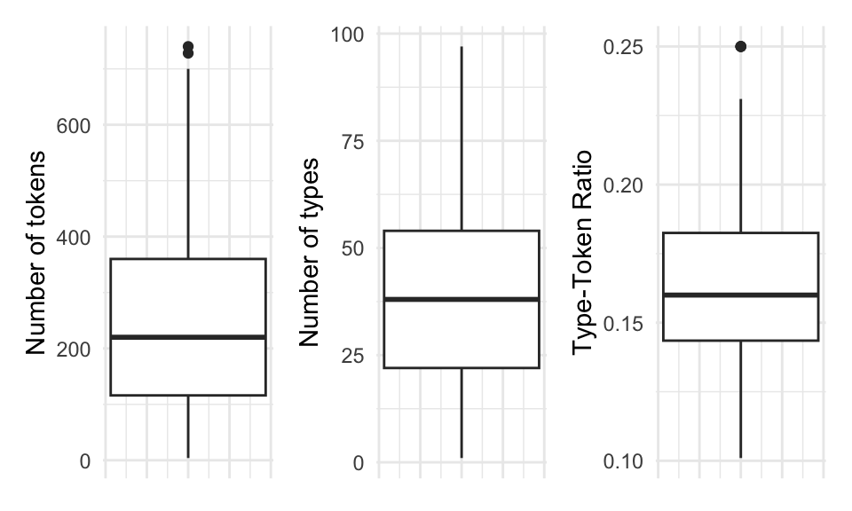
In a boxplot, the bold line is the median. The surrounding box around the median is the interquantile range. The extending lines above and below the IQR mark the largest and lowest value that is within 1.5 times either the 3rd (top of the box) or 1st (bottom of the box). Any values that fall outside, above or below, the extending lines are considered statistical outliers and are marked as dots. 1
Boxplots provide a robust and visually intuitive way of assessing central tendency and variability in a continuous variable but this type of plot can be complemented by looking at the overall distribution of the values in terms of their frequencies. A histogram provides a visualization of the frequency (and density in this case with the blue overlay) of the values across a continuous variable binned at regular intervals.
In Figure 3.18 I’ve plotted histograms in the top row and density plots in the bottom row for the same three continuous variables from the BELC dataset.

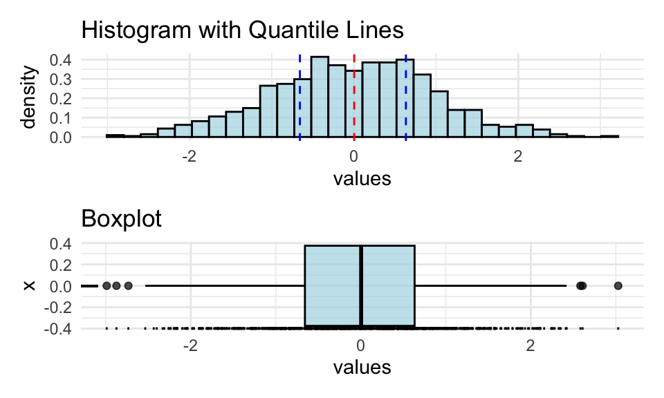
Histograms provide insight into the distribution of the data. For our three continuous variables, the distributions happen not to be too strikingly distinct. They are, however, not the same either. When we explore continuous variables with histograms we are often trying to assess whether there is skew or not. There are three general types of skew, visualized in Figure 3.20.


In histograms/ density plots in which the distribution is either left or right, the median and the mean are not aligned. The mode, which indicates the most frequent value in the variable is also not aligned with the other two measures. In a left-skewed distribution the mean will be to the left of the median which is left of the mode whereas in a right-skewed distribution the opposite occurs. In a distribution with absolutely no skew these three measures are the same. In practice these measures rarely align perfectly but it is very typical for these three measures to approximate alignment. It is common enough that this distribution is called the Normal Distribution 2 as it is very common in real-world data.
Another and potentially more informative way to inspect the normality of a distribution is to create Quantile-Quantile plots (QQ Plot). In Figure 3.22 I’ve created QQ plots for our three continuous variables. The line in each plot is the normal distribution and the more points that fall off of this line, the less likely that the distribution is normal.
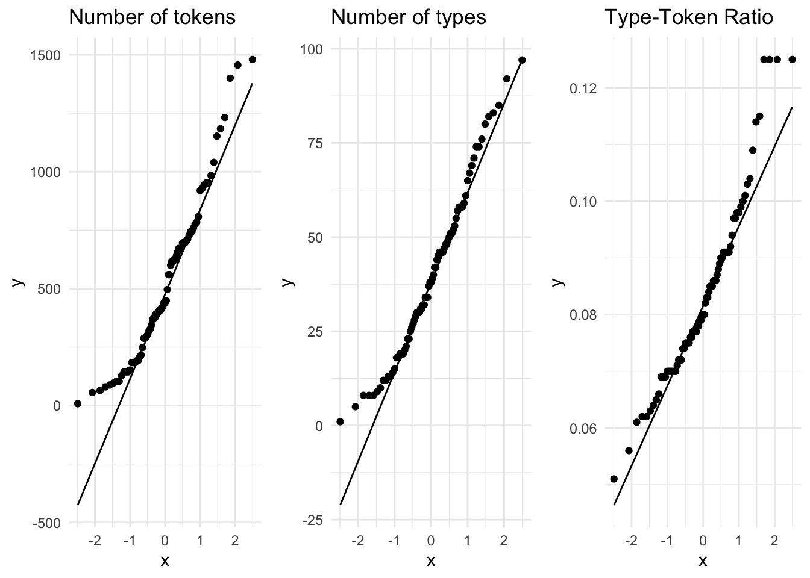
A visual inspection can often be enough to detect non-normality, but in cases which visually approximate the normal distribution (such as these) we can perform the Shapiro-Wilk test of normality. This is an inferential test that compares a variable’s distribution to the normal distribution. The likelihood that the distribution differs from the normal distribution is reflected in a \(p\)-value. A \(p\)-value below the .05 threshold suggests the distribution is non-normal. In Table 3.25 we see that given this criterion only the distribution of num_types is normally distributed.
| variable | statistic | p_value |
|---|---|---|
| Number of tokens | 0.942 | 0.001 |
| Number of types | 0.970 | 0.058 |
| Type-Token Ratio | 0.948 | 0.003 |
Downstream in the analytic analysis, the distribution of continuous variables will need to be taken into account for certain statistical tests. Tests that assume ‘normality’ are parametric tests, those that do not are non-parametric. Distributions which approximate the normal distribution can sometimes be transformed to conform to the normal distribution either by outlier trimming or through statistical procedures (e.g. square root, log, or inverse transformation), if necessary. At this stage, however, the most important thing is to recognize whether the distributions approximate or wildly diverge from the normal distribution.
Before we leave continuous variables, let’s consider another approach for visually summarizing a single continuous variable. The Empirical Cumulative Distribution Function, or ECDF, is a summary of the cumulative proportion of each of the values of a continuous variable over the domain of possible values. An ECDF plot can be useful in determining what proportion of the values fall above or below a certain percentage of the data.
In Figure 3.23 we see ECDF plots for our three continuous variables.
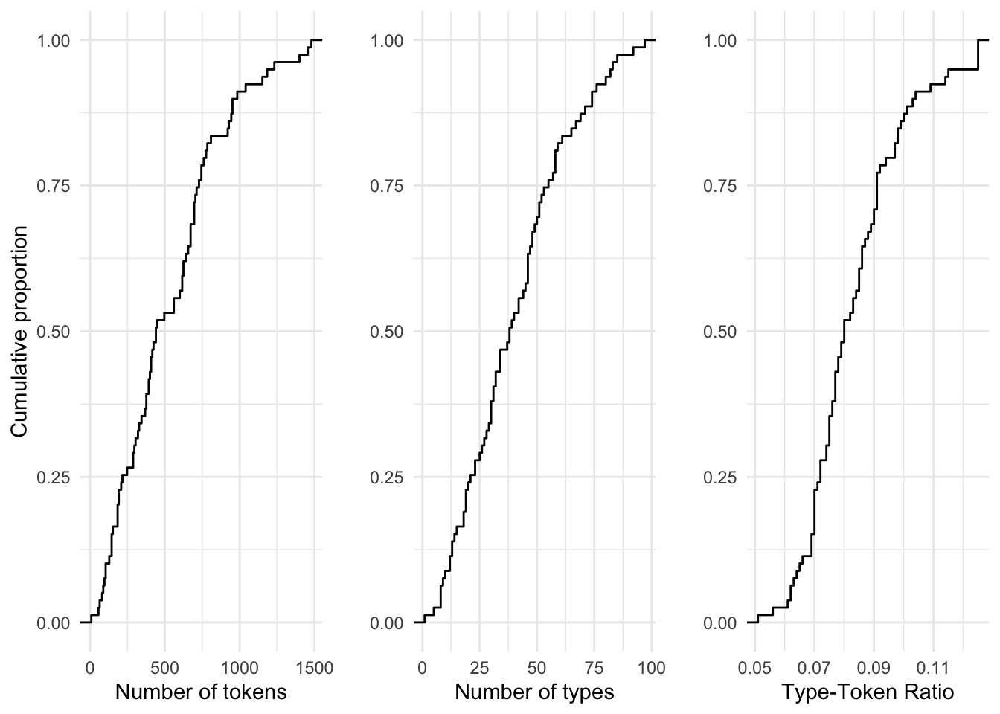
Take, for example, the number of tokens (num_tokens) per composition. The ECDF plot tells us that 50% of the values in this variable are 56 words or less. In the three variables plotted, the cumulative growth is quite steady. In some cases it is not. When it is not, an ECDF goes a long way to provide us a glimpse into key bends in the proportions of values in a variable.
Now let’s turn to the descriptive assessment of categorical variables. For categorical variables, central tendency can be calculated as well but only a subset of measures given the reduced informational value of categorical variables. For nominal variables where there is no relationship between the levels the central tendency is simply the mode. The levels of ordinal variables, however, are relational and therefore the median, in addition to the mode, can also be used as a measure of central tendency. Note that a variable with one mode is unimodal, two modes, bimmodal, and in variables that have two or more modes multimodal.
Below is a list of the central tendency metrics for the categorical variables in the BELC dataset.
Variable type: factor
| skim_variable | ordered | n_unique | top_counts |
|---|---|---|---|
| participant_id | FALSE | 36 | L05: 3, L10: 3, L11: 3, L12: 3 |
| age_group | TRUE | 4 | 10-: 24, 16-: 24, 12-: 16, 17-: 15 |
| sex | FALSE | 2 | fem: 48, mal: 31 |
In practice when a categorical variable has few levels it is common to simply summarize the counts of each level in a table to get an overview of the variable. With ordinal variables with more numerous levels, the five-score summary (quantiles) can be useful to summarize the distribution. In contrast to continuous variables where a graphical representation is very helpful to get perspective on the shape of the distribution of the values, the exploration of single categorical variables is rarely enhanced by plots.
Multiple variables
In addition to the single variable summaries (univariate), it is very useful to understand how two (bivariate) or more variables (multivariate) are related to add to our understanding of the shape of the relationships in the dataset. Just as with univariate summaries, the informational values of the variables frame our approach.
To explore the relationship between two continuous variables we can statistically summarize a relationship with a coefficient of correlation which is a measure of effect size between continuous variables. If the continuous variables approximate the normal distribution Pearson’s r is used, if not Kendall’s tau is the appropriate measure. A correlation coefficient ranges from -1 to 1 where 0 is no correlation and -1 or 1 is perfect correlation (either negative or positive). Let’s assess the correlation coefficient for the variables num_tokens and ttr. Since these variables are not normally distributed, we use Kendall’s tau. Using this measure the correlation coefficient is \(-0.565\) suggesting there is a correlation, but not a particularly strong one.
Correlation measures are important for reporting but to really appreciate a relationship it is best to graphically represent the variables in a scatterplot. In Figure 3.24 we see the relationship between num_tokens and ttr.
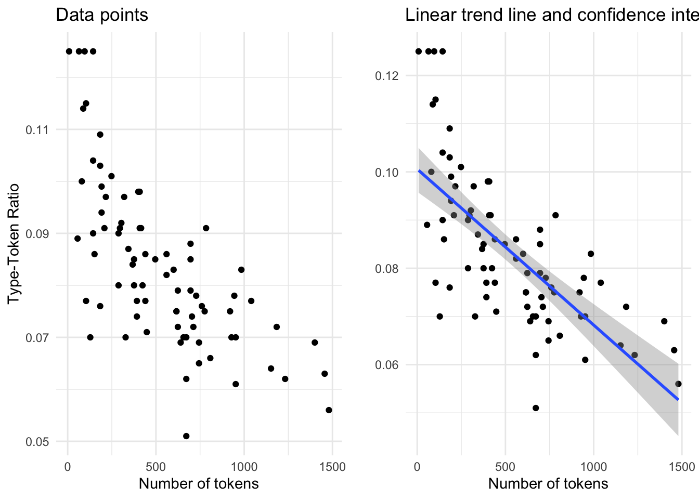
In both plots ttr is on the y-axis and num_tokens on the x-axis. The points correspond to the intersection between these variables for each single observation. In the left pane only the points are represented. Visually (and given the correlation coefficient) we can see that there is a negative relationship between the number of tokens and the Type-Token ratio: in other words, the more tokens a composition has the lower the Type-Token Ratio. In this case this trend is quite apparent, but in other cases is may not be. To provide an additional visual cue a trend line is often added to a scatterplot. In the right pane I’ve added a linear trend line. This line demarcates the optimal central tendency across the relationship, assuming a linear relationship. The steeper the line, or slope, the more likely the correlation is strong. The band, or ribbon, around this trend line indicates the confidence interval which means that real central tendency could fall anywhere within this space. The wider the ribbon, the larger the variation between the observations. In this case we see that the ribbon widens when the number of tokens is either low or high. This means that the trend line could be potentially be drawn either steeper (more strongly correlated) or flatter (less strongly correlated).
Let’s add another variable to the mix, in this case the categorical variable sex, taking our bivariate exploration to a multivariate exploration. Again each point corresponds to an observation where the values for num_tokens and ttr intersect. But now each of these points is given a color that reflects which level of sex it is associated with.
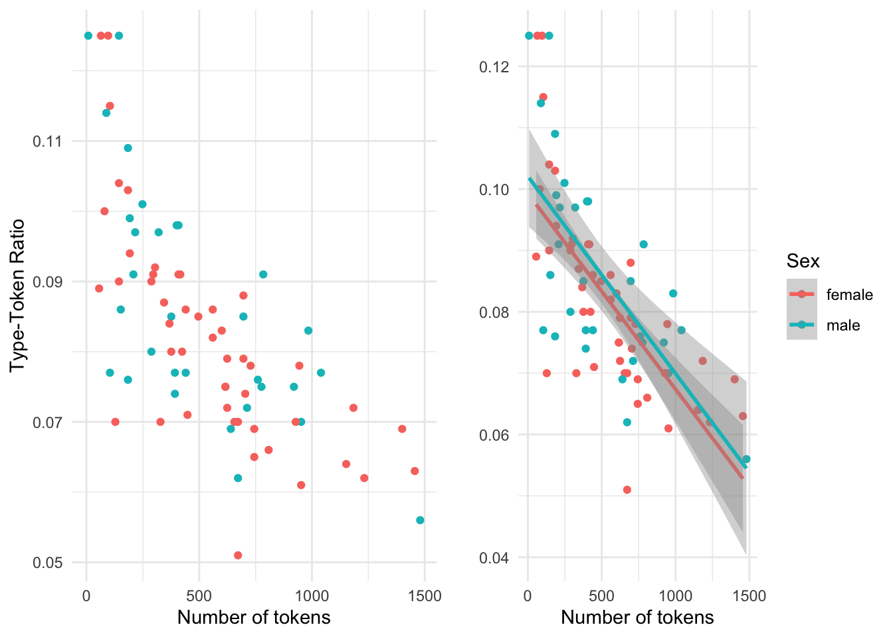
num_tokens and ttr.In this multivariate case, the scatterplot without the trend line is more difficult to interpret. The trend lines for the levels of sex help visually understand the variation of the relationship of num_tokensand ttr much better. But it is important to note that when there are multiple trend lines there is more than one slope to evaluate. The correlation coefficient can be calculated for each level of sex (i.e. ‘male’ and ‘female’) independently but the relationship between the each slope can be visually inspected and provide important information regarding each level’s relative distribution. If the trend lines are parallel (ignoring the ribbons for the moment), as it appears in this case, this suggests that the relationship between the continuous variables is stable across the levels of the categorical variable, with males showing more lexical diversity than females declining at a similar rate. If the lines were to cross, or suggest that they would cross at some point, then there would be a potentially important difference between the levels of the categorical variable (known as an interaction). Now let’s consider the meaning of the ribbons. Since the ribbons reflect the range in which the real trend line could fall, and these ribbons overlap, the differences between the levels of our categorical variable are likely not distinct. So at a descriptive level, this visual summary would suggest that there are no differences between the relationship between num_tokens and ttr for the distinct levels of sex.
Characterizing the relationship between two continuous variables, as we have seen is either performed through a correlation coefficient metric or visually. The approach for summarizing a bivariate relationship which combines a continuous and categorical variable is distinct. Since a categorical variable is by definition a class-oriented variable, a descriptive evaluation can include a tabular representation, with some type of summary statistic. For example, if we consider the relationship between num_tokens and age_group we can calculate the mean for num_tokens for each level of age_group. To provide a metric of dispersion we can include either the standard error of the mean (SEM) and/ or the confidence interval (CI).
| age_group | mean_num_tokens | sem | ci |
|---|---|---|---|
| 10-year-olds | 111 | 14.8 | 24.3 |
| 12-year-olds | 230 | 28.5 | 46.9 |
| 16-year-olds | 327 | 24.6 | 40.4 |
| 17-year-olds | 450 | 51.9 | 85.4 |
The SEM is a metric which summarizes variation based on the number of values and the CI, as we have seen, summarizes the potential range of in which the mean may fall given a likelihood criterion (usually the same as the \(p\)-value, .05).
Because we are assessing a categorical variable in combination with a continuous variable a table is an available visual summary. But as I have said before, a graphic summary is hard to beat. In the following figure (Figure 3.26) a barplot is provided which includes the means of num_tokens for each level of age_group. The overlaid bars represent the confidence interval for each mean score.

num_tokens by age_group from the BELC dataset.When CI ranges overlap, just as with ribbons in scatterplots, the likelihood that the differences between levels are ‘real’ is diminished.
To gauge the effect size of this relationship we can use Kendall’s τ for rank-based coefficients. The score is 0.708 indicating that the relationship between age_group and num_tokens is quite strong. 3
Now, if we want to explore a multivariate relationship and add sex to the current descriptive summary, we can create a summary table, but let’s jump straight to a barplot.

num_tokens by age_group and sex from the BELC dataset.We see in Figure 3.27 that on the whole, the appears to be general trend towards more tokens in a composition for more advanced learner levels. However, the non-overlap in CI bars for the ‘12-year-olds’ for the levels of sex (‘male’ and ‘female’) suggest that 12-year-old females may produce more tokens per composition than males –a potential divergence from the overall trend.
Barplots are a familiar and common visualization for summaries of continuous variables across levels of categorical variables, but a boxplot is another useful visualization of this type of relationship.

age_group and num_tokens from the BELC dataset.As seen when summarizing single continuous variables, boxplots provide a rich set of information concerning the distribution of a continuous variable. In this case we can visually compare the continuous variable num_tokens with the categorical variable age_group. The plot in the right pane includes ‘notches’. Notches represent the confidence interval, in boxplots this interval surrounds the median. When compared horizontally across levels of a categorical variable the overlap of notched spaces suggest that the true median may be within the same range. Additionally, when the confidence interval goes outside the interquantile range (the box) the notches hinge back to the either the 1st (lower) or the 3rd (higher) IQR range and suggests that the variability is high.
We can also add a third variable to our exploration. As in the barplot in Figure 3.27, the boxplot in Figure 3.29 suggests that there is an overall trend towards more tokens per composition as a learner advances in experience, except at the ‘12-year-old’ level where there appears to be a difference between ‘males’ and ‘females’.
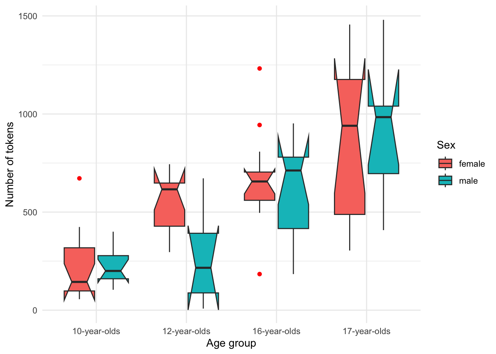
age_group, num_tokens and sex from the BELC dataset.Up to this point in our exploration of multiple variables we have always included at least one continuous variable. The central tendency for continuous variables can be summarized in multiple ways (mean, median, and mode) and when calculating means and medians, measures of dispersion are also provide helpful information summarize variability. When working with categorical variables, however, measures of central tendency and dispersion are more limited. For ordinal variables central tendency can be summarized by the median or mode and dispersion can be assessed with an interquantile range. For nominal variables the mode is the only measure of central tendency and dispersion is not applicable. For this reason relationships between categorical variables are typically summarized using contingency tables which provide cross-variable counts for each level of the target categorical variables.
Let’s explore the relationship between the categorical variables sex and age_group. In Table 3.27 we see the contingency table with summary counts and percentages.
| sex/age_group | 10-year-olds | 12-year-olds | 16-year-olds | 17-year-olds | Total |
|---|---|---|---|---|---|
| female | 58% (14) | 69% (11) | 54% (13) | 67% (10) | 61% (48) |
| male | 42% (10) | 31% (5) | 46% (11) | 33% (5) | 39% (31) |
| Total | 100% (24) | 100% (16) | 100% (24) | 100% (15) | 100% (79) |
As the size of the contingency table increases, visual inspection becomes more difficult. As we have seen, a graphical summary often proves more helpful to detect patterns.
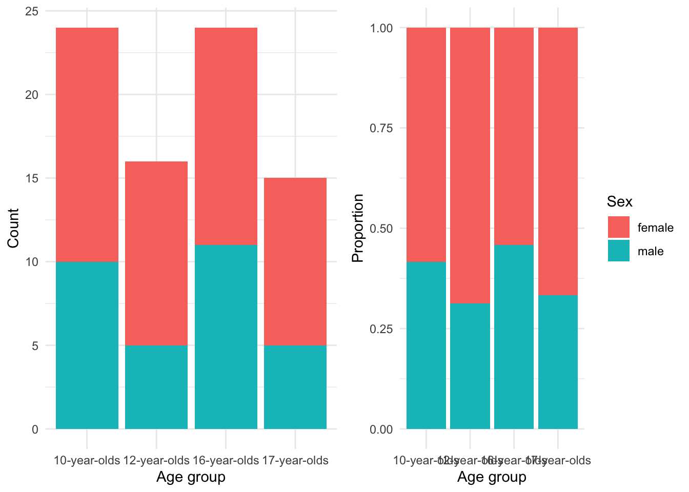
In Figure 3.30 the left pane shows the counts. Counts alone can be tricky to evaluate and adjusting the barplot to account for the proportions of males to females in each group, as shown in the right pane, provides a clearer picture of the relationship. From these barplots we can see there were more females in the study overall and particularly in the 12-year-olds and 17-year-olds groups. To gauge the association strength between sex and age_group we can calculate Cramer’s V which, in spirit, is like our correlation coefficients for the relationship between continuous variables. The Cramer’s V score for this relationship is 0 which is low, suggesting that there is not a strong association between sex and age_group –in other words, the relationship is stable.
Let’s look at a more complex case in which we have three categorical variables. Now the dataset, as is, does not have a third categorical variable for us to explore but we can recast the continuous num_tokens variable as a categorical variable if we bin the scores into groups. I’ve binned tokens into three score groups with equal ranges in a new variable called rank_tokens.
Adding a second categorical independent variable ups the complexity of our analysis and as a result our visualization strategy will change. Our numerical summary will include individual two-way cross-tabulations for each of the levels for the third variable. In this case it is often best to use the variable with the fewest levels as the third variable, in this case sex.
| rank_tokens/age_group | 10-year-olds | 12-year-olds | 16-year-olds | 17-year-olds | Total |
|---|---|---|---|---|---|
| low | 27% (13) | 10% (5) | 4% (2) | 6% (3) | 48% (23) |
| mid | 2% (1) | 13% (6) | 21% (10) | 6% (3) | 42% (20) |
| high | 0% (0) | 0% (0) | 2% (1) | 8% (4) | 10% (5) |
| Total | 29% (14) | 23% (11) | 27% (13) | 21% (10) | 100% (48) |
| rank_tokens/age_group | 10-year-olds | 12-year-olds | 16-year-olds | 17-year-olds | Total |
|---|---|---|---|---|---|
| low | 32% (10) | 13% (4) | 13% (4) | 3% (1) | 61% (19) |
| mid | 0% (0) | 3% (1) | 23% (7) | 6% (2) | 32% (10) |
| high | 0% (0) | 0% (0) | 0% (0) | 6% (2) | 6% (2) |
| Total | 32% (10) | 16% (5) | 35% (11) | 16% (5) | 100% (31) |
Contingency tables with this many levels are notoriously difficult to interpret. A plot that is often used for three-way contingency table summaries is a mosaic plot. In Figure 3.31 I have created a mosaic plot for the three categorical variables in the previous contingency tables.

age_group, rank_tokens, and sex in the BELC dataset.The mosaic plot suggests that the number of tokens per composition increase as the learner age group increases and that females show more tokens earlier.
In sum, a dataset is information but when the observations become numerous or complex they are visually difficult to inspect and understand at a pattern level. The descriptive methods described in this section are indispensable for providing the researcher an overview of the nature of each variable and any (potential) relationships between variables in a dataset. Importantly, the understanding derived from this exploration underlies all subsequent investigation and will counted on to frame your approach to analysis regardless of the research goals and the methods employed to derive more substantial knowledge.
3.5 Types of analysis
From identifying a target population, to selecting a data sample that represents that population, and then to structuring the sample into a dataset, the goals of a research project inform and frame the process. So it will be unsurprising to know that the process of selecting an approach to analysis is also intimately linked with a researcher’s objectives. The goal of analysis, generally, is to generate knowledge from information. The type of knowledge generated and the process by which it is generated, however, differ and can be broadly grouped into three analysis types: exploratory, predictive, and inferential. In this section I will provide an overview of how each of these analysis types are tied to research goals and how the general goals of each type affect: (1) how to identify the variables of interest, (2) how to interrogate these variables, and (3) how to interpret the results. I will structure the discussion of these analysis types moving from the least structured (inductive) to most structured (deductive) approach to deriving knowledge from information with the aim to provide enough information to the would-be-researcher to identify these research approaches in the literature and to make appropriate decisions as to which approach their research should adopt.
3.5.1 Inferential data analysis
The most commonly recognized of the three data analysis approaches, inferential data analysis (IDA) is the bread-and-butter of science. IDA is a deductive, or top-down, approach to investigation in which every step in research stems from a premise, or hypothesis, about the nature of a relationship in the world and then aims to test whether this relationship is statistically supported given the evidence. The aim is to infer conclusions about a certain relationship in the population based on a statistical evaluation of a (corpus) sample. So, if a researcher’s aim is to draw conclusions that generalize, then, this is the analysis approach a researcher will take.
Given the fact that this approach aims at making claims that can be generalized to the larger population, the IDA approach has the most rigorous set of methodological restrictions. First and foremost of these is the fact that a testable hypothesis must be formulated before research begins. The hypothesis guides the collection of data, the organization of the data into a dataset and the transformation, selection of the variables to be used to address the hypothesis, and the interpretation of the results. To conduct an analysis and then draw a hypothesis which conforms to the results is known as “Hypothesis After Result is Known” (HARKing) (Kerr 1998) and this practice violates the principles of significance testing. A second key stipulation is that the reliability of the sample data, the corpus in text analysis, to provide evidence to test the hypothesis must be representative of the population. A corpus used in a study which is misaligned with the hypothesis undermines the ability of the researcher to make valid claims about the population. In essence, IDA is only as good as the primary data is is based on.
At this point, let me elaborate on the potentially counterintuitive nature of hypothesis formulation and testing. The IDA, or Null-Hypothesis Significance Testing (NHST), paradigm is in fact approached by proposing two mutually exclusive hypotheses. The first is the Alternative Hypothesis (\(H_1\)). \(H_1\) is a precise statement grounded in the previous literature outlining a predicted relationship (and in some cases the directionality of a relationship). This is the effect that the research aims to investigate. The second hypothesis is the Null Hypothesis (\(H_0\)). \(H_0\) is the flip-side of the hypothesis testing coin and states that there is no difference or relationship. Together \(H_1\) and \(H_0\) cover all logical outcomes.
So to provide an example consider a hypothetical study which is aimed at investigating the claim that men and women differ in terms of the number of questions they use in spontaneous conversations. The Alternative Hypothesis would be formulated in this way:
\(H_1\): Men and women differ in the frequency of the use of questions in spontaneous conversations.
The Null Hypothesis, then, would be a statement describing the remaining logical outcomes. Formally:
\(H_0\): There is no difference between how men and women use questions in spontaneous conversations.
Note that stated in this way our hypothesis makes no prediction about the directionality of the difference between men and women, only that there is a difference. It is a likely scenario that a hypothesis will stake a claim on the direction of the difference. A directional hypothesis would look like this:
\(H_1\): Women use more questions than men in spontaneous conversations.
\(H_0\): There is no difference between how men and women use questions in spontaneous conversations or men use more questions than women.
A further aspect which may run counter to expectations is that the aim of hypothesis testing is not to find evidence in support of \(H_1\), but rather the aim is to assess the likelihood that we can reliably reject \(H_0\). The default assumption is that \(H_0\) is true until there is sufficient evidence to reject it and accept \(H_1\), the alternative. The metric used to determine if there is sufficient evidence is based on the probability that given the nature of the relationship and the characteristics of the data, the likelihood of there being no difference or relationship is low. The threshold for likelihood has traditionally been summarized in the p-value statistic. In the Social Sciences, a p-value lower that .05 is considered statistically significant which when interpreted correctly means that there is more than a 95% chance that the observed relationship would not be predicted by \(H_0\). Note that we are working in the realm of probability, not in absolutes, therefore an analysis that produces a significant result does not prove \(H_1\) is correct or that \(H_0\) is incorrect, for that matter. A margin of error is always present.
Let’s now turn to the identification of variables, the statistical interrogation of these variables, and the interpretation of the statistical results. First, since a clearly defined and testable hypothesis is at the center of the IDA approach, the variables are in some sense pre-defined. The goal of the researcher is to select data and curate that data to produce variables that are operationalized (practically measured) to test the hypothesis. A second consideration are the roles that the variables will play in the analysis. In standard IDA one variable will be the dependent variable and one or more variables will be independent variables. The dependent variable, sometimes referred to as the outcome or response variable, is the variable which contains the information which is predicted to depend on the information in the independent variable(s). It is the variable whose variation a research study seeks to explain. An independent variable, sometimes referred to as a predictor or explanatory variable, is a variable whose variation is predicted to explain the variation in the dependent variable.
Returning to our hypothetical study on the use of questions between men and women in spontaneous conversation, the frequency of questions used by each speaker would be our dependent variable and the biological sex of the speakers our independent variable. This is so because hypothesis (\(H_1\)) states the proposition that a speaker’s sex will predict the frequency of questions used.
In our hypothetical study we’ve identified two variables, one dependent and one independent. It is important keep in mind that there can be multiple independent variables in cases where the dependent variable’s variation is predicted to be related to multiple variables. This relationship would need to be explicitly part of the original hypothesis, however.
Say we formulate a more complex relationship where the educational level of our speakers is also related to the number of questions. We can update our hypothesis to reflect such a scenario.
\(H_1\): Less educated women use more questions than men in spontaneous conversations.
\(H_0\): There is no difference between how men and women use questions in spontaneous conversations regardless of educational level, or more educated women use more questions than less educated women, or men use more questions than women.
The hypothesis we have described predicts what is known as an interaction; the relationship between our independent variables predict different variational patterns in the dependent variable. As you most likely can appreciate the more independent variables we include in our hypothesis, and by extension our analysis, the more difficult it becomes to interpret. Due to the increasing difficulty for interpretation, in practice, IDA studies rarely include more than two or three independent variables in the same analysis.
Independent variables add to the complexity of a study because they are part of our research focus, specifically our hypothesis. It is, however, common to include other variables which are not of central focus, but are commonly assumed to contribute to the explanation of the variation of the dependent variable. Let’s assume that the background literature suggests that the age of speakers also plays a role in the number of questions that men and women use in spontaneous conversation. Let’s also assume that the data we have collected includes information about the age of speakers. If we would like to factor out the potential influence of age on the use of questions and focus on the particular independent variables we’ve defined in our hypothesis, we can include the age of speakers as a control variable. A control variable will be added to the statistical analysis and documented in our report but it will not be included in the hypothesis nor interpreted in our results.
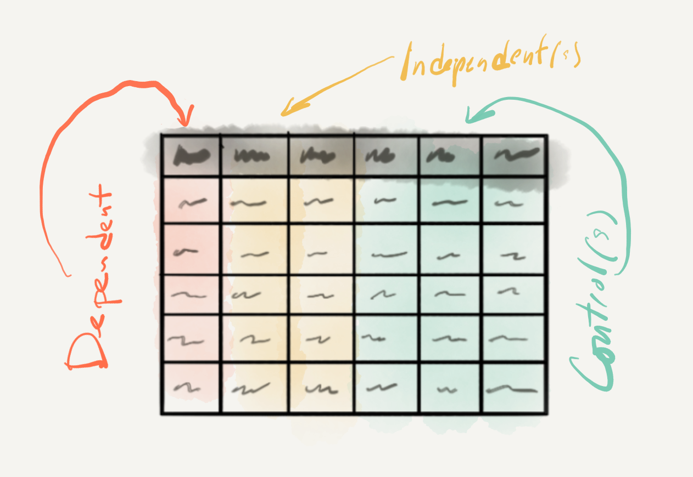
At this point let’s look at the main characteristics that need to be taken into account to statistically interrogate the variables we have chosen to test our hypothesis. The type of statistical test that one chooses is based on (1) the informational value of the dependent variable and (2) the number of independent variables included in the analysis. Together these two characteristics go a long way in determining the appropriate class of statistical test, but other considerations about the distribution of particular variables (i.e. normality), relationships between variables (i.e. independence), and expected directionality of the predicted effect may condition the appropriate method to be applied.
As you can imagine, there are a host of combinations and statistical tests that apply in particular scenarios, too many to consider in given the scope of this coursebook (see Gries (2013) and Paquot and Gries (2020) for a more exhaustive description). Below I’ve summarized some common statistical scenarios and their associated tests which focus on the juxtaposition of informational values and the number of variables, leaving aside alternative tests which deal with non-normal distributions, ordinal variables, non-independent variables, etc.
In Table 3.30 we see monofactorial tests, tests with only one independent variable.
| Dependent | Independent | Test |
|---|---|---|
| Categorical | Categorical | Pearson’s Chi-squared test |
| Continuous | Categorical | Student’s t-Test |
| Continuous | Continuous | Pearson’s correlation test |
Table 3.31 includes a listing of multifactorial tests, tests with more than one independent and/ or control variables.
| Dependent | Independent | Control | Test |
|---|---|---|---|
| Categorical | varied | varied | Logistic regression |
| Continuous | varied | varied | Linear regression |
One key point to make before we turn to how to interpret the statistical results is concerns the use of the data in IDA. In contrast to the other two analysis methods we will cover, the data in IDA is only used once. That is to say, that the entire dataset is used a single time to statistically interrogate the relationship(s) of interest. The resulting confidence metrics (p-values, etc.) are evaluated and the findings are interpreted. The practice of running multiple tests until a statistically significant result is found is called “p-hacking” (Head et al. 2015) and like HARKing (described earlier) violates statistical hypothesis testing practice. For this reason it is vital to identify your statistical approach from the outset of your research project.
Now let’s consider how to approach interpreting the results from a statistical test. As I have now made reference to multiple times, the results of statistical procedure in hypothesis testing will result in a confidence metric. The most standard and widely used of these confidence metrics is the p-value. The p-value provides a probability that the results of our statistical test could be explained by the null hypothesis. When this probability crosses below the threshold of .05, the result is considered statistically significant, otherwise we have a ‘null result’ (i.e. non-significant). However, this sets up a binary distinction that can be problematic. On the one hand what is one to do if a test returns a p-value of .051 or something ‘marginally significant’? According to standard practice these results would not be statistically significant. But it is important to note that a p-value is sensitive to the sample size. A small sample may return a non-significant result, but a larger sample size with the same underlying characteristics may very well return a significant result. On the other hand, if we get a statistically significant result, do we move on –case closed? As I just pointed out the sample size plays a role in finding statistically significant results, but that does not mean that the results are ‘important’ for even small effects in large samples can return a significant p-value.
It is important to underscore that the purpose of IDA is to draw conclusions from a dataset which are generalizable to the population. These conclusions require that there are rigorous measures to ensure that the results of the analysis do not overgeneralize (suggest there is a relationship when there is not one) and balance that with the fact that we don’t want to undergeneralize (miss the fact that there is an relationship in the population, but our analysis was not capable of detecting it). Overgeneralization is known as Type I error or false positive and undergeneralization is a Type II error or false negative.
For these reasons it is important to calculate the size and magnitude of the result to gauge the uncertainty of our result in standardized, sample size-independent way. This is performed by analyzing the effect size and reporting a confidence interval (CI) for the results. The wider the CI the more uncertainty surrounds our statistical result, and therefore the more likely that our significant p-value could be the result of Type I error. A non-significant p-value and large effect size could be the result of Type II error. In addition to vetting our p-value, the CI and effect size can help determine if a significant result is reliable and ‘important’. Together effect size and CIs aid in our ability to realistically interpret confidence metrics in statistical hypothesis testing.
3.5.2 Predictive data analysis
Predictive data analysis (PDA) is the first of the two types of statistical approaches we will cover that fall under machine learning. A branch of artificial intelligence (AI), machine learning aims to develop computer algorithms that can essentially learn patterns from data automatically. In the case of PDA, also known as supervised learning, the learning process is guided (supervised) by directing an algorithm to associate patterns in a variable or set of variables to single particular variable. The particular variable is analogous to some degree to a dependent variable in IDA, but in the machine learning literature this variable is known as the target variable. The other variable or (more often than not) variables are known as features. The goal of PDA is to develop a statistical generalization that can accurately predict the values of a target variable using the values of the feature variables. PDA can be seen as a mix of deductive (top-down) and inductive (bottom-up) methods in that the target variable is determined by a research goal but the feature variables and choice of statistical method (algorithm) are not fixed and can vary depending on their usefulness in effectively predicting the target variable. PDA is a versatile method that often employed to derive intelligent action from data, but it can also be used for hypothesis generation and even hypothesis testing, under certain conditions. If a researcher’s aim is to create model that can perform a language related task, explore association strength between a target variable and various types and combinations of features, or to perform emerging alternative approaches to hypothesis testing 4, this is the analysis approach a researcher will take.
At this point let’s consider some departures from the inferential data analysis (IDA) approach we covered in the last subsection that are important to highlight to orient our overview of PDA. First, while the cornerstone of IDA is the hypothesis, in PDA this is typically not the case. A research question which identifies a source of potential uncertainty in an area and outlines a strategy for addressing this uncertainty is sufficient groundwork to embark on an analysis. A second divergence, is the fact that the data is used in a very distinct way. In IDA the entire dataset is statistically interrogated once and only once. In PDA the dataset is (minimally) partitioned into a training set and a test set. The training set is used to train a statistical model and the test set is left to test the accuracy of the statistical model. The training set typically constitutes a larger portion of the data (typically around 75%) and serves as the test bed for iteratively applying one or more algorithms and/ or feature combinations to produce the most successful learning model. The test set is reserved for a final evaluation of the model’s performance. Depending on the application and the amount of available data, a third development set is sometimes created as a pseudo test set to facilitate the testing of multiple approaches on data outside the training set before the final evaluation on the test set is performed. In this scenario the proportions of the partitions vary, but a good rule of thumb is to reserve 60% of the data for training, 20% for development, and 20% for testing.
Let’s now turn to the identification of variables, the statistical interrogation of these variables, and the interpretation of the statistical results. In IDA the variables (features) are pre-determined by the hypothesis and the informational values and number of these variables plays a significant role in selecting a statistical procedure (algorithm). Lacking a hypothesis, a PDA approach’s main goal is to make accurate predictions on the target variable and is free to explore any number of features and feature combinations to that end. The target variable is the only variable which necessarily fixed and in this light pre-determined.
To give an example, let’s consider a language task in which the goal is to take text messages (SMS) and develop a language model that predict if a message is spam or not. Minimally we would need data which includes individual text messages and each of these text message will need to be labeled as being either spam or legitimate messages (‘ham’ in this case). In Table 3.32 we see the first ten of 5574 observations from the SMS Spam Collection (v.1) dataset collected by Almeida, Gómez Hildago, and Yamakami (2011).
| sms_type | message |
|---|---|
| ham | Go until jurong point, crazy.. Available only in bugis n great world la e buffet… Cine there got amore wat… |
| ham | Ok lar… Joking wif u oni… |
| spam | Free entry in 2 a wkly comp to win FA Cup final tkts 21st May 2005. Text FA to 87121 to receive entry question(std txt rate)T&C’s apply 08452810075over18’s |
| ham | U dun say so early hor… U c already then say… |
| ham | Nah I don’t think he goes to usf, he lives around here though |
| spam | FreeMsg Hey there darling it’s been 3 week’s now and no word back! I’d like some fun you up for it still? Tb ok! XxX std chgs to send, £1.50 to rcv |
| ham | Even my brother is not like to speak with me. They treat me like aids patent. |
| ham | As per your request ‘Melle Melle (Oru Minnaminunginte Nurungu Vettam)’ has been set as your callertune for all Callers. Press *9 to copy your friends Callertune |
| spam | WINNER!! As a valued network customer you have been selected to receivea £900 prize reward! To claim call 09061701461. Claim code KL341. Valid 12 hours only. |
| spam | Had your mobile 11 months or more? U R entitled to Update to the latest colour mobiles with camera for Free! Call The Mobile Update Co FREE on 08002986030 |
As it stands we have two variables; sms_type is clearly the target and message contain the full messages. The question is how best to transform the information in the message variable such that it will provide an algorithm useful information to predict each value of sms_type. Since the informational value of sms_type is categorical we will call the values classes. The process of deciding on how to transform the information in message into useful features is called feature engineering and it is a process which is much an art as a science. On the creative side of things it is often helpful to have a mixture of relevant domain knowledge and clever hacking skills to envision what features may work best. The more logistic side of things requires some knowledge about the strengths and weaknesses of various learning algorithms when dealing with certain number and informational value feature combinations.
Leaving the choice of algorithm aside, let’s focus on feature engineering. Since each message value is a unique message, the chance that using message as it is, is not likely to help us make reliable predictions about the status of new message (‘spam’ or ‘ham’). A simple first-pass approach to decomposing message to draw out similarities and distinctions between the classes may be to break each message into words. Now SMS messages are not your average type of text –there are many non-standard forms. So our definition of word may simply be character groupings broken apart by whitespace. To avoid confusion between our common-sense understanding of word and the types of character strings, it is often the case that language feature values are called terms. Other term types may work better, n-grams, character sequences, stems/lemmas, or even combinations of these. Certain terms may be removed that are potentially uninformative either based on their class (stopwords, numerals, punctuation, etc.) or due to their distribution. The process of systematic isolation of terms which are more informative than others is called dimensionality reduction (Kowsari et al. 2019). With experience a research will become more adept a recognizing advantages and potential issues and alternative ways of approaching the creation of features but there is almost always some level of trial and error in the process. Feature engineering is very much an exploratory process. It is also iterative. You can try a set of features with an algorithm and produce a language model and test it on the training set –if is accurate, great. If not, you can brainstorm some more –you are free to try further engineer the features trying new features or feature measures (term weights) and/ or change the learning algorithm.
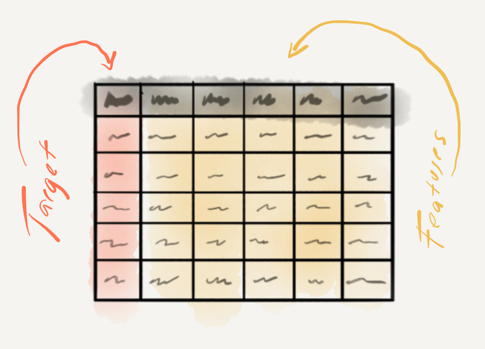
Let’s now turn to some considerations to take into account when selecting a statistical algorithm. First, just as in IDA, variable informational value plays a role in algorithm selection, specifically the informational value of the target variable. If the target variable is categorical, then we are looking for a classification algorithm. If the target variable is continuous, we will employ a regression algorithm. 5 Some common classification algorithms are listed in Table 3.22.
| Classification | Regression |
|---|---|
| Logistic Regression | Linear Regression |
| Support Vector Machine | Support Vector Regression |
| Naïve Bayes Classifier | Poisson Regression |
| Neural Network | |
| Decision Tree |
Another consideration to take into account is the whether the researcher aims to go beyond simply using an algorithm to make accurate predictions, but also wants to understand how the algorithm made its predictions and what contribution features made in the process. There are algorithms that produce models that allow the researcher to peer into and understand its inner workings (e.g. logistic regression, naïve bayes classifiers, inter alia) and those that do not (e.g. neural networks, support vector machines, inter alia). Those that do not are called ‘black-box’ algorithms. Neither type assures the best prediction accuracy. Important trade-offs need to be considered, however, if the best prediction comes from a black-box method, but the goal of the research is to understand the contribution of the features to the model’s predictions.
Once we have identified our target variable, engineered a promising set of features, and selected an algorithm to employ that meets our research goals, it is now time to interrogate the dataset. The first step is to partition the dataset into a training and test set. The training set is the dataset we will use to try out different features and/ or algorithms with the aim of developing a model which can most accurately predict the target variable values in this training set. This is the second step and it’s done by first training an algorithm to associate the features with the (actual) target values. Next, the resulting model is then applied to the same training data, yet with the target variable removed, or hidden, from the machine learner. The target values predicted by the model for each observation are compared to the actual target values. The more predicted and actual values for the target variable coincide, the more accurate the model. If the model shows high accuracy, then we are ready to move to evaluate this model on the test set (again removing the target variable). If the model accuracy is low, it’s back to the drawing board either returning to feature engineering and/ or algorithm selection in hopes to improve model performance. In this way, the training data can be used multiple times, a clear divergence from standard IDA methods in which the data is interrogated and analyzed once and only once.
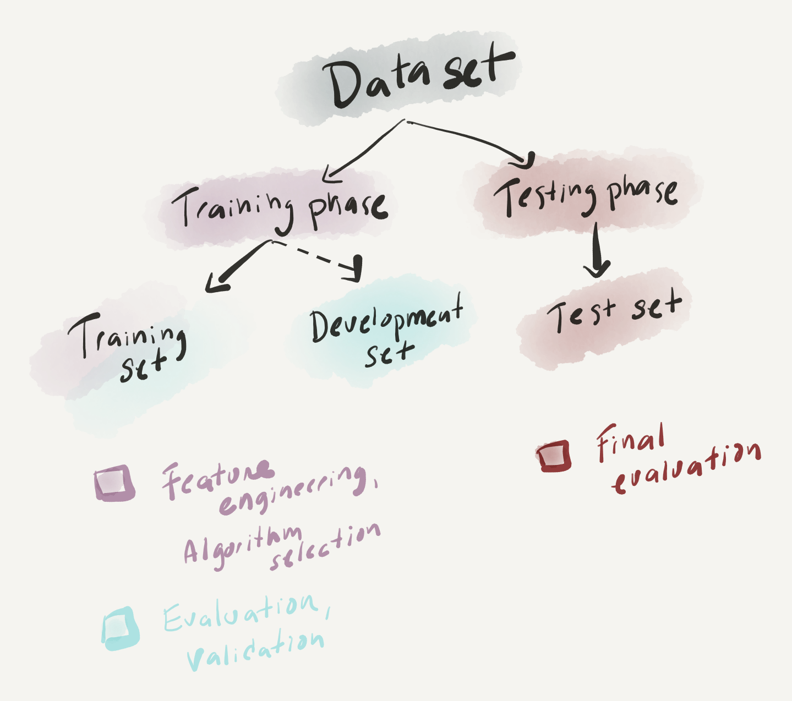
For all applications of PDA the interpretation of the prediction model includes some metric or metrics of accuracy comparing the extent to which the models predictions and the actual targets align. In cases in which the inner workings of the model are of interest, a researcher can dive into features and their contributions to the prediction model in an exploratory fashion according to the research goals. The exploration of features, then, varies, so at this time let’s focus on the metrics of prediction accuracy.
The standard form for evaluating a model’s performance differs between classification models (naive bayes) and regression models (linear regression). For classification models, a cross-tabulation of the predicted and actual classes results in a contingency table which can be used to calculate accuracy which is the sum of all the correctly predicted observations divided by the total number of observations in the test set. In addition to accuracy, there are various other measures which aim to assess a model’s performance to gain more insight into the potential over- or under-generalization of the model (Precision and Recall). For regression models, differences between predicted and actual values can be assessed using a coefficient of correlation (typically \(R^2\)). Again, more fine-grained detail about the model’s performance can be calculated (Root Mean Square Error).
Another component worthy of consideration when evaluating a model’s performance is how do we determine if the performance is actually good. One the one hand, accuracy rates into the 90+% range on the test set is usually a good sign that the model is performing well. No model will perform with perfect accuracy, however, and depending on the goal of the research particular error patterns may be more important, and problematic, than the overall prediction accuracy. On the other hand, another eventuality is that the model performs very well on the training set but that on the test set (new data) the performance drops significantly. This is a sign that during the training phrase the machine learning algorithm learned nuances in the data (‘noise’) that obscure the signal pattern to be learned. This problem is called overfitting and to avoid it researchers iteratively run evaluations of the training data using resampling. The two most common resampling methods are bootstrapping (resampling with replacement) and cross-validation (resampling without replacement). The performance of these multiple models are summarized and the error between them is assessed. The goal is to minimize the performance differences between the models while maximizing the overall performance. These measures go a long way to avoiding overfitting and therefore maximizing the chance that the training phase will produce a model which is robust.
3.5.3 Exploratory data analysis
The last of the three analysis types, exploratory data analysis (EDA) includes a wide range of methods whose objective is to identify structure in datasets using only the data itself. In this way, EDA is an inductive, bottom-up approach to data analysis, which does not make any formal assumptions about the relationship(s) between variables. EDA can be roughly broken into two subgroups of analysis. Unsupervised learning, like supervised learning (PDA), is a subtype of machine learning. However, unlike prediction, unsupervised learning does not include a target variable to guide associations. The second subgroup of EDA methods can be seen as a (more robust) extension of the descriptive analysis methods covered earlier in this chapter. Either through unsupervised learning or descriptive methods, EDA employs quantitative methods to summarize, reduce, and sort complex datasets and statistically and visually interrogate a dataset in order to provide the researcher novel perspective to be qualitatively assessed. These qualitative assessments may prove useful to generate hypotheses or to generate groupings to be used in predictive analyses. So, if a researcher’s aim is to probe a dataset in order to explore potential relationships in an area where predictions and/ or hypotheses cannot be clearly made, this is the analysis approach to choose.
In contrast to both IDA and even PDA in which there are assumptions made about what relationship(s) to explore, EDA makes no such assumptions. Furthermore, given the exploratory nature of the process, EDA is not an approach which can in itself be used to make conclusive generalizations about the populations from which the (corpus) sample in which it is drawn. For IDA the fidelity of the sample and the process of selection of the variables is of utmost importance to ensure that the statistical results are reliably generalizable. Even in the case of PDA, the sample and variables selected are key to building a robust predictive model. However, in contrast to IDA, but similar to PDA, EDA methods may reuse the data selecting different variables and/or methods as research goals dictate. If a machine learning approach to EDA is adopted, the dataset can be partitioned into training and test sets, in a similar fashion to PDA. And as with PDA, the training set is used for refining statistical measures and the test set is used to evaluate the refined measures. Although the evaluation results still cannot be used to generalize, the insight can be taken as stronger evidence that there is a potential relationship, or set of relationships, worthy of further study.
Another notable point of contrast concerns the interpretation of EDA results. Although quantitative in nature, exploratory methods involve a high level of human interpretation. Human interpretation is a part of each stage of data analysis, and each statistical approach, in general, but exploratory methods produce results that require associative thinking and pattern detection which is distinct from the other two analysis approaches, in particular, IDA.
Again, as we have done for the other two analysis approaches, let’s turn to the process of variable identification, data interrogation, and interpretation methods. As in the case of PDA, EDA only requires a research goal. But in PDA, the research goal centered around predicting a target variable. In EDA, there is no such focus. The research goal may in fact be less defined and a researcher may consider various relationships in turn or simultaneously. The curation of the variables, however, does overlap in spirit to the process of feature engineering that we touched on for creating variables for predictive models. But in EDA the measure to gauge whether the engineered variables are good, is left to the qualitative evaluation of the researcher.

For illustrative purposes let’s consider the State of the Union Corpus (SOTU) (Benoit 2020). The presidential addresses and a set of meta-data variables are included in the corpus. I’ve subsetted this corpus to only include U.S. presidents since 1946. A tabular preview of the first 10 addresses (truncated for display) can be found in Table 3.19.
| president | date | delivery | party | addresses |
|---|---|---|---|---|
| Truman | 1946-01-21 | written | Democratic | To the Congress of the United States: A quarter... |
| Truman | 1947-01-06 | spoken | Democratic | Mr. President, Mr. Speaker, Members of the Cong... |
| Truman | 1948-01-07 | spoken | Democratic | Mr. President, Mr. Speaker, and Members of the ... |
| Truman | 1949-01-05 | spoken | Democratic | Mr. President, Mr. Speaker, Members of the Cong... |
| Truman | 1950-01-04 | spoken | Democratic | Mr. President, Mr. Speaker, Members of the Cong... |
| Truman | 1951-01-08 | spoken | Democratic | Mr. President, Mr. Speaker, Members of the Cong... |
| Truman | 1952-01-09 | spoken | Democratic | Mr. President, Mr. Speaker, Members of the Cong... |
| Truman | 1953-01-07 | written | Democratic | To the Congress of the United States: I have th... |
| Eisenhower | 1953-02-02 | spoken | Republican | Mr. President, Mr. Speaker, Members of the Eigh... |
| Eisenhower | 1954-01-07 | spoken | Republican | Mr. President, Mr. Speaker, Members of the Eigh... |
A dataset such as this one could be leveraged to explore many different types of research questions. Key to guiding the engineering of features, however, is to clarify from the outset of the research project what the entity of study is, or unit of analysis. In IDA and PDA approaches, the unit of analysis forms an explicit part of the research hypothesis or goal. In EDA the research question may have multiple fronts, which may be reflected in differing units of analysis. For example, based on the SOTU dataset, we could be interested in political rhetoric, language of particular presidents, party ideology, etc. Depending on the perspective we are interested in investigating, the choice of how to approach engineering features to gain insight will vary.
By the same token, approaches for interrogating the dataset can vary widely, between and within the same research project, but for instructive purposes we can draw a distinction between descriptive methods and unsupervised learning methods.
| Descriptive | Unsupervised learning |
|---|---|
| Term frequency analysis | Cluster analysis |
| Term keyness analysis | Topic Modeling |
| Collocation analysis | Dimensionality reduction |
EDA leans heavily on visual representations of both descriptive and unsupervised learning methods. Visualizations enable humans to identify and extrapolate associative patterns. Visualizations range from standard barplots and scatterplots to network graphs and dendrograms and more. Some sample visualizations based on the SOTU Corpus are found in Figure 3.36.
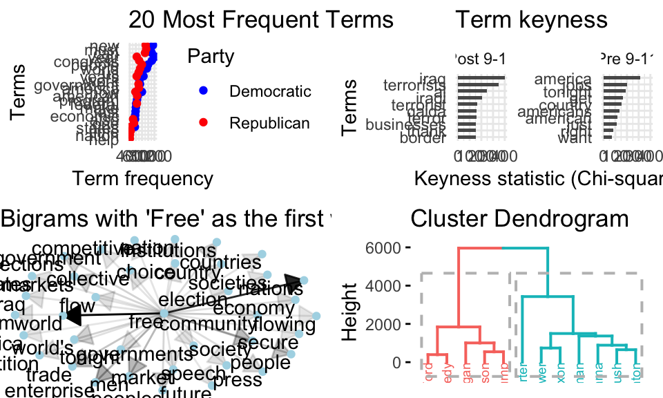
Just as feature selection and analysis method, the interpretation of the results in EDA are much more varied than in the other analysis methods. EDA methods provide information which requires much more human intervention and associative interpretation. In this way, EDA can be seen as a quantitatively informed qualitative assessment approach. The results from one approach can be used as the input to another. Findings can lead to further exploration and probing of nuances in the data. Speculative as they are the results from exploratory methods can be highly informative and lead to new insight and inspire further study in directions that may not have been expected.
3.6 Reporting
Much of the necessary reporting for an analysis features in prose as part of the write-up of a report or article. This will include descriptive summaries, a blueprint of the method(s) used, and the results. Descriptive summaries will often include assessments of individual variables and/ or relationships between variables (central tendency, dispersion, association strength, etc.). Any procedures applied to diagnose or to correct the data should also be included in the final report. This information is key to helping readers assess the results from the analysis. A blueprint of the methods used will describe the variable selection process, how the variables were used in the statistical analysis, and any other information that is relevant for a reader to understand what was done and why it was done. Reporting results from an analysis will depend on the type of analysis and the particular method(s) employed. For inferential analyses this will include the test statistic(s) (\(X^2\), \(R^2\), etc.) and some measure of confidence (\(p\)-value, confidence interval, effect size). In predictive analyses accuracy results and related information will need to be reported. For exploratory analyses, the reporting of results will vary and often include visualizations and metrics that require more human interpretation than the other analysis types.
While a good article write-up will include the most vital information to understand the procedures taken in an analysis, there are many more details which do not traditionally appear in prose. If a research project was conducted programmatically, however, the programming files (scripts) used to generate the analysis can (and should) be shared. While the scripts themselves are highly useful for other researchers to consult and understand in fine-grained detail the steps that were taken, it is important to also recognize that the research project should be well documented –through organized project directory and file structure as well as through code commenting. This description and instructions on how to run the analysis form a research compendium which ensure that the research conducted is easily understood and able to be reproduced and/ or enhanced by other researchers.
Summary
In this chapter we have focused on description and analysis –the third component of DIKI Hierarchy. This process is visually summarized in Figure 3.37.

Building on the strategies covered in Chapter 2 “Understanding data” to derive a rich relational dataset, in this chapter we outlined key points in approaching analysis. The first key step in any analysis is to perform a descriptive assessment of the individual variables and relationships between variables. To select the appropriate descriptive measures we covered the various informational values that a variable can take. In addition to providing key information for reporting purposes, descriptive measures are important to explore so the researcher can get a better feel for the dataset before conducting an analysis.
We covered three data analysis types in this chapter: inferential, predictive, and exploratory. Each of these embodies very distinct approaches to deriving knowledge from data. Ultimately the choice of analysis type is highly dependent on the goals of the research. Inferential analysis is centered around the goal of testing a hypothesis, and for this reason it is the most highly structured approach to analysis. This structure is aimed at providing the mechanisms to draw conclusions from the results that can be generalized to the target population. Predictive analysis has a less-ambitious but at times more relevant goal of discovering the extent to which a given relationship can be extrapolated from the data to provide a model of language that can accurately predict an outcome using new data. While many times predictive analysis is used to perform language tasks, it can also be a highly effective methodology for applying different algorithmic approaches and exploring relationships a target variable and various configurations of variables. The ability to explore the data in multiple ways, is also a key strength of employing an exploratory analysis. The least structured and most variable of the analysis types, exploratory analyses are a powerful approach to deriving knowledge from data in an area where clear predictions cannot be made.
I rounded out this chapter with a short description of the importance of reporting the metrics, procedures, and results from analysis. Reporting, in its traditional form, is documented in prose in an article. This reporting aims to provide the key information that a reader will need to understand what was done, how it was done, and why it was done. This information also provides the necessary information for reader’s with a critical eye to understand the analysis in more detail. Yet even the most detailed reporting in a write-up still leaves many practical, but key, points of the analysis obscured. A programming approach provides the procedural steps taken that when shared provide the exact methods applied. Together with the write-up a research compendium which provides the scripts to run the analysis and documentation on how to run the analysis forms an integral part of creating reproducible research.
Activities
Questions
Note that each of these three variables are to be considered separately here (vertically). Later we will see the use of boxplots to compare a continuous variable across levels of a categorical variable (horizontally).↩︎
formally known as a Gaussian Distribution↩︎
To calculate effect sizes for the difference between two means, Cohen’s d is used.↩︎
The name regression can be a bit confusing given a very common classification algorithm is “Logistic Regression”.↩︎